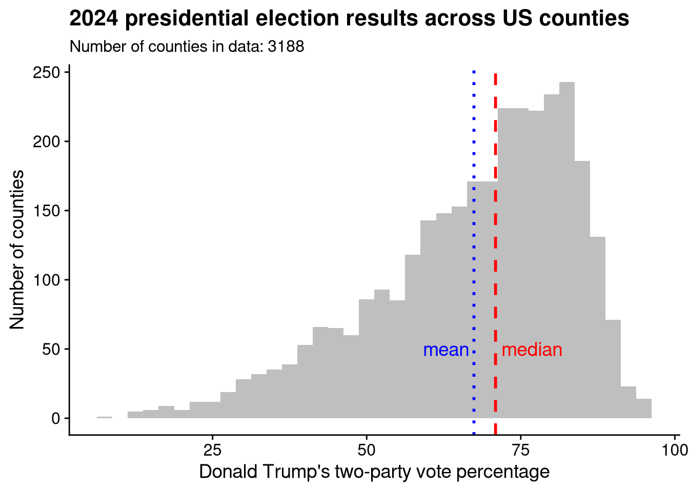
4 Derivatives
4.1 Motivation: A statistical guessing game
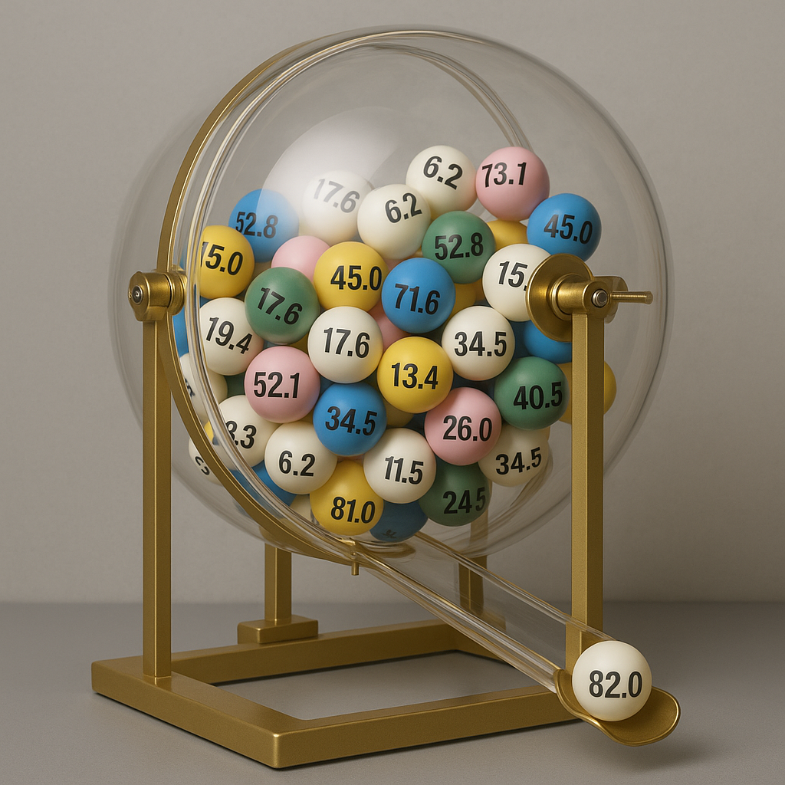
Let’s imagine a tweak on a traditional lottery. We fill the lottery drum with N balls, each of which is labeled with a real number between 0 and 100. You get to look at all of the labels, then you pick a number. We spin the drum and choose a single lottery ball at random. The most you can win — if you guessed the number exactly — is $10,000. If your guess wasn’t exact, your winnings are reduced by the square of the difference between your guess and the number that was drawn. For example, if you guessed 40 and the ball that was drawn said 52, meaning you were off by 12, you’d get $9,856: 10{,}000 - 12^2 = 10{,}000 - 144 = 9{,}856.
To give this game a political twist, let’s assume there’s one ball for every county in the United States, and each ball is labeled with Donald Trump’s two-party vote percentage in that county in the 2024 presidential election. Figure 4.1 illustrates the distribution of labels on the lottery balls. The distribution is left-skewed: the mean value, 67.4, is slightly less than the median, 70.9.
Let’s calculate how much we could expect to win from the lottery if we were to make a guess of 70. For each of the 3,188 balls in the lottery drum, we can calculate how much we would win if that ball happened to be the one that were drawn. For example, Trump’s worst county in the data, unsurprisingly, is the District of Columbia, where he got just 6.7% of the two-party vote. If we guessed 70 and happened to draw the DC ball, we would be off by 63.3, leaving us with winnings of $5993.11. Repeating this process for each ball in the lottery drum, Figure 4.2 illustrates the distribution of how much we would win for each ball that could be drawn.
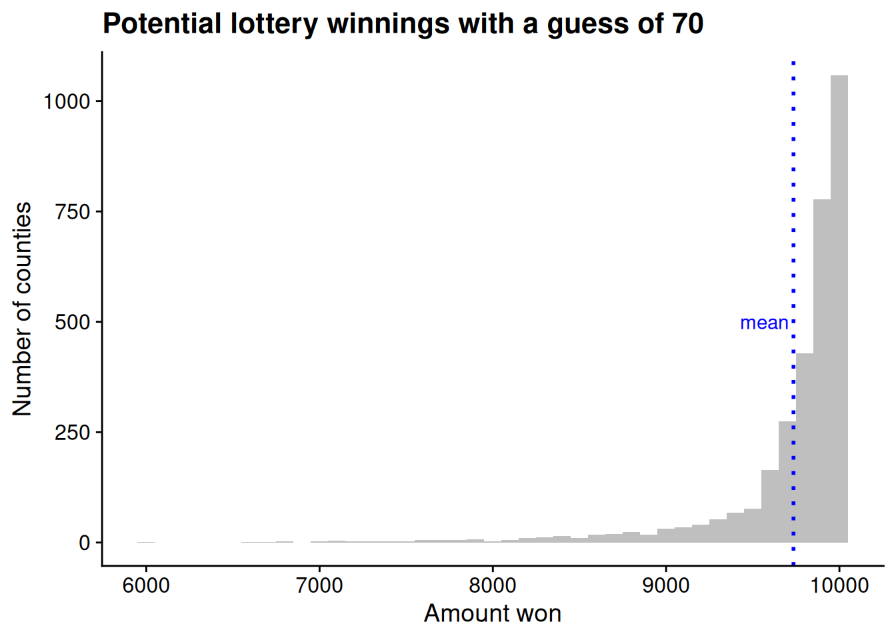
With a guess of 70, on average we win $9735.09. That sounds pretty good, but can we do even better?
Our goal is to figure out which lottery guess will give us the highest winnings on average. Let’s use a bit of mathematical notation to describe this problem as precisely as possible. We’ll use the index i to represent each lottery ball, so i will range from 1 to N (3188). We’ll also use the notation x_i to stand for the label on the i’th ball, and g to stand for our guess. Finally, we’ll let W(g) be the function (see Section 1.3) that returns our expected winnings given a guess of g: \begin{aligned} W(g) &= \frac{1}{3188} \cdot [10000 - (6.7 - g)^2] + \frac{1}{3188} \cdot [10000 - (11.5 - g)^2] + \cdots + \frac{1}{3188} \cdot [10000 - (96.2 - g)^2] \\ &= \frac{1}{N} \cdot [10000 - (x_1 - g)^2] + \frac{1}{N} \cdot [10000 - (x_2 - g)^2] + \cdots + \frac{1}{N} \cdot [10000 - (x_N - g)^2] \\ &= \frac{1}{N} \sum_{i = 1}^N \left[10000 - (x_i - g)^2\right]. \end{aligned} (If you’re not seeing how the second line leads to the third, go back and check Note 3.1.)
Let’s plug a few potential guesses into this formula to see how much we could expect to win from each one. Figure 4.3 shows how much we would win on average for a guess of 50, 55, 60, or so on, through 90.
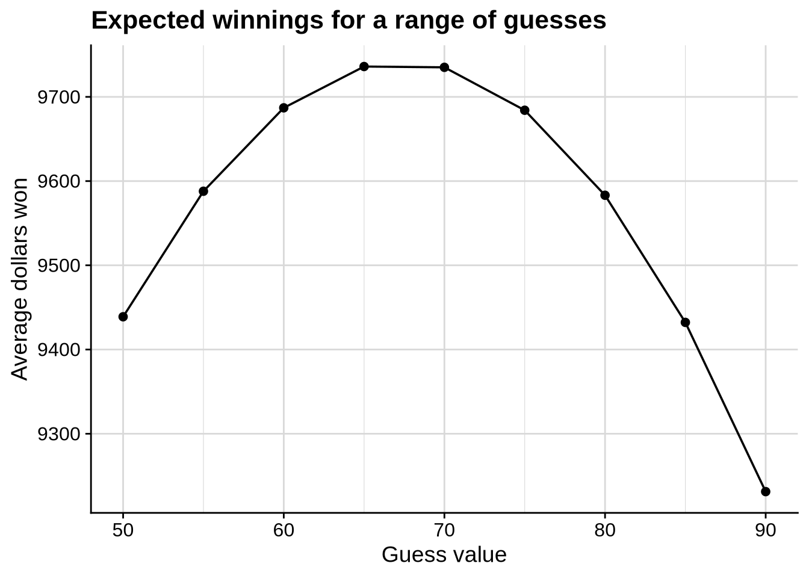
It looks like we slightly overshot with our initial guess of 70, as we would expect to win slightly more by guessing 65 instead. But can we do even better than 65? To check, let’s narrow our focus to the 60–70 range, going in increments of 1 instead of 5.
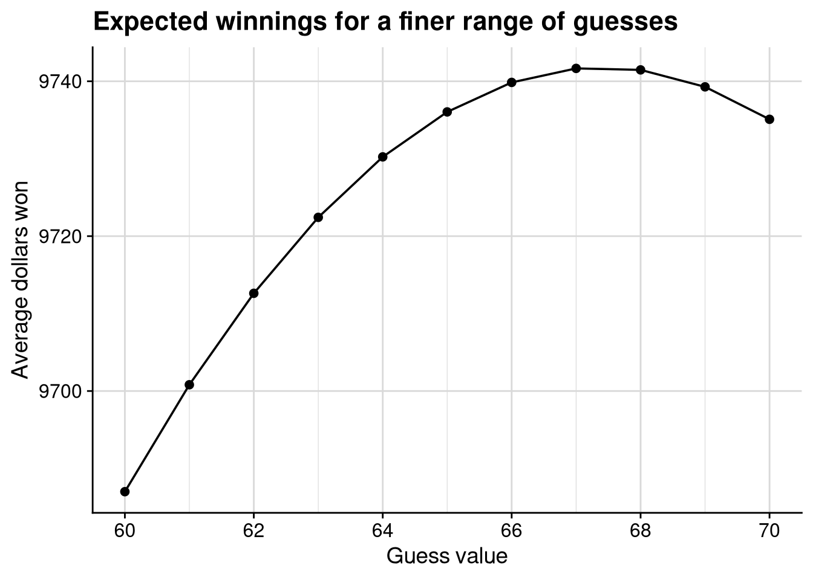
Well, now it looks like we would slightly undershoot by guessing 65. The best guess now appears to be about 67. To see if we can do even better than that, let’s zoom in one more time, looking at a range of guesses between 66 and 68.
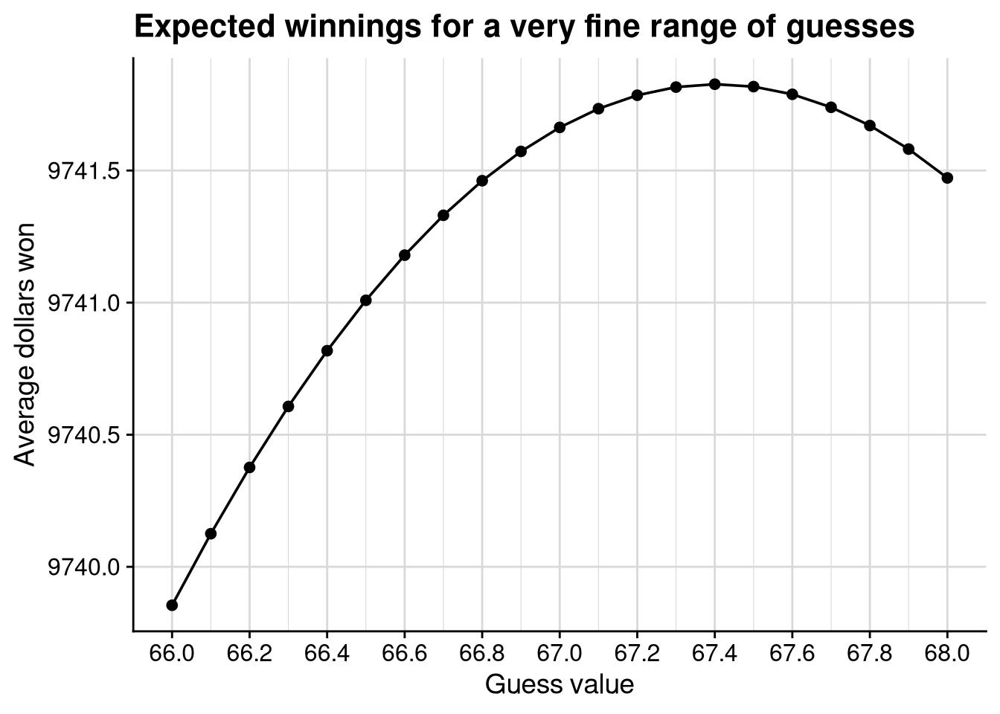
If we’re really dedicated to squeezing every cent of expected value from this lottery, it looks like we’re better off guessing 67.4 than with an even 67. Come to think of it, going back to Figure 4.1, wasn’t 67.4 the average value of Trump’s vote percentage across all the counties in our lottery drum?
Is the answer to our problem simply to guess the average of all the labels in the lottery drum? If so, could we have figured that out without plugging all these possible guesses into the formula? Would this same trick work if the lottery balls were labeled differently, or is it just a coincidence that the average is the best guess here?
We can answer these questions, but we’ll need some new mathematical tools to do so. These tools are known as differential calculusMathematical techniques for studying the “rate of change” of a function — how quickly or slowly the function is increasing or decreasing at a particular point in its domain..
4.2 Limits of functions
Go back and look at the progression from Figure 4.3 to Figure 4.5 in the lottery example. It’s like we were zooming in on the domain of the function: first looking in increments of 5, then increments of 1, and finally increments of 0.1. The closer we zoomed in, the more accurate an idea we got about the optimal guess.
In Figure 4.3, with increments of 5, we could see that a guess of 60 was too low, but a guess of 70 was too high.
In Figure 4.4, with increments of 1, we could see that a guess of 66 was too low, but a guess of 68 was too high.
In Figure 4.5, with increments of 0.1, we could see that a guess of 67.3 was too low, but a guess of 67.5 was too high.
You could imagine continuing this process for smaller and smaller increments, down to 0.01, then 0.001, and so on. The smaller the increment that we look at, the closer we’ll get to the winnings-maximizing guess.
The problem is that no matter how small an increment we check, there’s always a smaller one. Why stop at 67.4, when we haven’t figured out if we could eke out a few extra cents (on average) by guessing 67.38 or 67.43? The process never stops — it’s like Zeno’s race course paradox. In this sense, we face a problem of limits, much like we did back in our study of sequences in Section 3.3. To solve the problem, we will need to take our notion of the limit of a sequence, and adapt it to work with functions.
4.2.1 Defining the limit of a function
We’ll start with something much simpler than the lottery game. Think about the function depicted below in Figure 4.6. At every point in the domain besides x = 0, we have f(x) = 1 + 2x. At x = 0, the value of the function “jumps” up to 1.5.
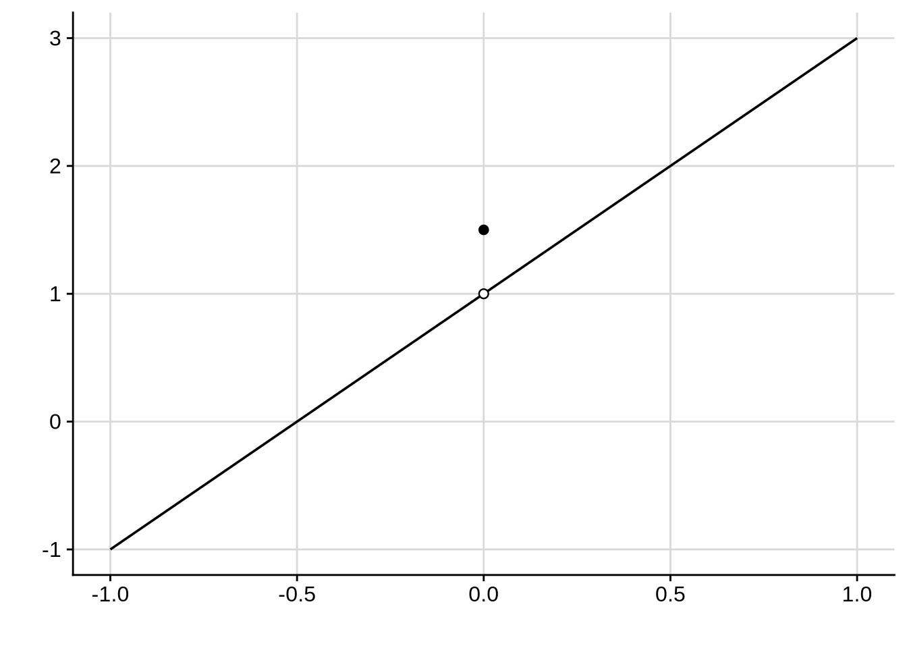
One way to define this function formally would be using the “cases” notation with a curly brace: f(x) = \begin{cases} 1 + 2 x & \text{if $x \neq 0$}, \\ 1.5 & \text{if $x = 0$}. \end{cases}
If we get really close to x = 0 on the domain but not quite there, the value of the function gets really close to 1. This is true no matter how close we get, as long as we don’t go all the way to x = 0 itself. In this sense, we would say the limit of the functionThe limit of f(x) as x approaches c, denoted \lim_{x \to c} f(x), is the value that f(x) gets closer and closer to as x gets closer and closer to c without reaching it. The formal definition is that \lim_{x \to c} f(x) = y if, for all \epsilon > 0, there is a value \delta > 0 such that |f(x) - y| < \epsilon for all x \in (c - \delta, c) \cup (c, c + \delta). A function may not have a limit at a particular point. as x approaches 0 is equal to 1. In mathematical notation, we would write \lim_{x \to 0} f(x) = 1.
The problem with this kind of limiting statement is that we end up in an infinite regress. However close to x = 0 we look, we can always look a little bit closer — so how do we ever get close enough to say for certain what the limit is? Back in our formal definition of a limit for a sequence (Definition 3.2), we used a “challenge-response” structure to escape the infinite regress. We will use a similar challenge-response method to define the limit of a function. Suppose I have a function f, and I want to claim that \lim_{x \to c} f(x) = y, i.e., the limit of the function as x approaches the point c in its domain is equal to y.
You challenge me by picking a \epsilon > 0.
Think of this as you saying “I need you to show me that if we are close enough to x = c on the domain of the function, then the value of f(x) is within \epsilon of your claimed limit, y.”
I respond to the challenge by identifying a value \delta > 0. I need to show you that if 0 < |x - c| < \delta, then we have |f(x) - y| < \epsilon.
In words, at any point on the domain whose distance from c is less than \delta (other than c itself), the value of the function is at least as close to my claimed limit as you challenged me to show.
If I can conjure up a valid response to any \epsilon > 0 challenge that you might issue, then my claim about the limit of the function stands. This line of reasoning gives us our formal definition of the limit of a function.
Definition 4.1 (Limit of a function) Let X \subseteq \mathbb{R} be an open interval, and consider the function f: X \to \mathbb{R}. For a point c \in X, we say that the limit of the function as x approaches c equals y, denoted \lim_{x \to c} f(x) = y, if the following condition holds: for any value of \epsilon > 0, there exists a value \delta > 0 such that |f(x) - y| < \epsilon for all x satisfying 0 < |x - c| < \delta.
NoteOptional technical note: Extension to general domains
I have stated the formal definition only for functions whose domain is an open interval. Under this stipulation, the domain X must take one of the four following forms:
X is the whole real line, X = \mathbb{R}.
X is the set of numbers strictly greater than some real number a, X = \{x \in \mathbb{R} \mid x > a\} = (a, \infty).
X is the set of numbers strictly less than some real number b, X = \{x \in \mathbb{R} \mid x < b\} = (-\infty, b).
X is the set of numbers strictly greater than some real number a and strictly less than some real number b, X = \{x \in \mathbb{R} \mid a < x < b\} = (a, b).
This restriction ensures that for any c \in X, it is possible to find a \delta small enough that (c - \delta, c + \delta) \subseteq X, and thus the value of f(x) is well-defined for all x \in (c - \delta, c + \delta).
The definition of a function limit extends rather straightforwardly to cases where the domain is not an open interval, but then it requires some extra bookkeeping to deal with cases where we cannot evaluate f(x) across all of (c - \delta, c + \delta) even for \delta arbitrarily small. For example, think about a function whose domain is the closed interval X = [0, 1], and imagine taking a limit as x \to 1. No matter how small \delta is, we cannot evaluate the function over (1, 1 + \delta).
To skirt this problem for functions with general domains X \subseteq \mathbb{R}, we redefine the limit in terms of sequences. Specifically, for a point c \in X, we say that \lim_{x \to c} f(x) = y if the following condition holds: for every sequence \{x_n\} \to c where each x_n \in X and each x_n \neq c, we have \{f(x_n)\} \to y (Rudin 1976, Theorem 4.2).
If the domain of the function is an open interval, this definition corresponds exactly to Definition 4.1.
If the domain of the function is a closed interval [a, b], this definition corresponds exactly to Definition 4.1 for all c \in (a, b). For the lower boundary a, the limit is equal to the right-hand limit (see Definition 4.2 below). For the upper boundary b, the limit is equal to the left-hand limit.
Like the formal definition of the limit of a sequence, this definition is probably hard to parse in purely abstract terms. To make it make a bit more sense, let’s practice using the formal definition to show that f(x) \to 1 as x \to 0 for the function illustrated in Figure 4.6.
Example 4.1 (Using the formal definition of a function limit) We are working with the function depicted in Figure 4.6, namely f(x) = \begin{cases} 1 + 2x & \text{if $x \neq 0$}, \\ 1.5 & \text{if $x = 0$}. \end{cases} It seems clear from the illustration that \lim_{x \to 0} f(x) = 1, but how can we show this formally using Definition 4.1?
We’ll start by considering any “challenge” \epsilon > 0. This is akin to someone telling us: you need to show that if x is close enough to 0, then f(x) is within \epsilon of the claimed limit, namely 1. Because we want to show that we can meet any such challenge, we are not going to put a specific value on \epsilon. Instead, we’ll show that for an arbitrary value of \epsilon > 0 — a value that we know nothing about, other than the fact that it’s a positive number — we can find a \delta that satisfies the challenge.
Our response to the challenge will be \delta = \epsilon / 2. We need to show that if 0 < |x - 0| < \delta, then |f(x) - 1| < \epsilon. Equivalently, we need to show that if x \in (-\delta, 0) \cup (0, \delta), then -\epsilon < f(x) - 1 < \epsilon. We’ll do this in two parts.
For all x \in (-\delta, 0), we have f(x) = 1 + 2x > 1 + 2(-\delta) = 1 + 2\left(-\frac{\epsilon}{2}\right) = 1 - \epsilon and f(x) = 1 + 2x < 1 + 2(0) = 1. Therefore, for all such x, we have -\epsilon < f(x) - 1 < 0 < \epsilon, as required.
For all x \in (0, \delta), we have f(x) = 1 + 2x > 1 + 2(0) = 1 and f(x) = 1 + 2x < 1 + 2\delta = 1 + 2\left(\frac{\epsilon}{2}\right) = 1 + \epsilon. Therefore, for all such x, we have -\epsilon < 0 < f(x) - 1 < \epsilon, as required.
We have shown that for any challenge \epsilon > 0 to our claim that \lim_{x \to 0} f(x) = 1, we have a valid response, namely \delta = \epsilon/2. Therefore, we have proved that \lim_{x \to 0} f(x) = 1.
The next exercise asks you to generalize the logic of this example to all functions that are linear everywhere except (perhaps) a single point.
Exercise 4.1 (Limit of a linear function) Let c, \alpha, and \beta be real numbers. Let f : \mathbb{R} \to \mathbb{R} be a function such that f(x) = \alpha + \beta x for all x \neq c. Prove that \lim_{x \to c} f(x) = \alpha + \beta c.
Answer
First consider the case where \beta \neq 0. The problem is then analogous to Example 4.1, and our approach will be analogous. Consider any challenge \epsilon > 0. I claim that \delta = \epsilon / |\beta| is a valid response. For all x satisfying 0 < |x - c| < \delta, we have \begin{aligned} |f(x) - (\alpha + \beta c)| &= |(\alpha + \beta x) - (\alpha + \beta c)| \\ &= |\alpha + \beta x - \alpha - \beta c| \\ &= |\beta x - \beta c| \\ &= |\beta (x - c)| \\ &= |\beta| \cdot |x - c| \\ &< |\beta| \cdot \delta \\ &= |\beta| \cdot \frac{\epsilon}{|\beta|} \\ &= \epsilon, \end{aligned} so \delta is a valid response to the challenge. Because \epsilon was chosen arbitrarily, this proves that \lim_{x \to c} f(x) = \alpha + \beta c.
The approach in the previous paragraph does not quite work when \beta = 0, as then we cannot divide by \beta when choosing our \delta response. In this case, however, our problem is even simpler, as the function is constant: f(x) = \alpha for all x \neq c. Consider any challenge \epsilon > 0. I claim that any \delta > 0 is a valid response. For all x satisfying 0 < |x - c| < \delta, we have |f(x) - \alpha| = |\alpha - \alpha| = 0 < \epsilon, so \delta is a valid response to the challenge. Because \epsilon was chosen arbitrarily, this proves that \lim_{x \to c} f(x) = \alpha = \alpha + \beta c when \beta = 0.
Just as with the limits of sequences, a function can have at most one limit at a particular point in its domain. And just as with the limits of sequences, there is no guarantee that \lim_{x \to c} f(x) exists. As a simple example of a non-existent limit, think about the point x = 0 in the “step function” f(x) = \begin{cases} 0 & \text{if $x < 0$}, \\ 1 & \text{if $x \geq 0$}, \end{cases} which is illustrated below in Figure 4.7.
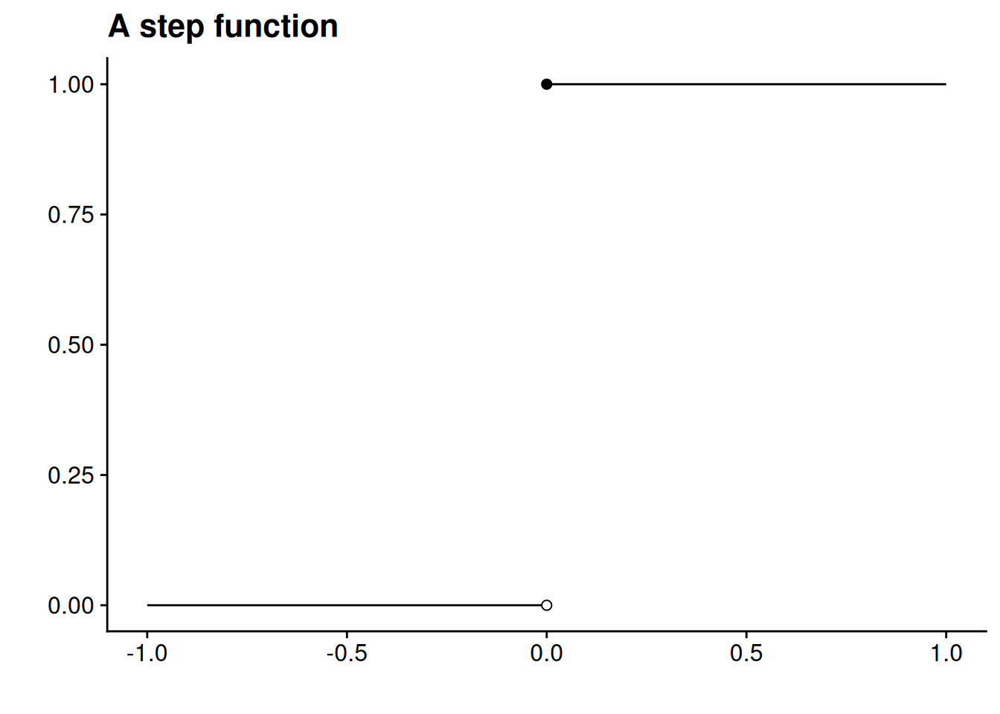
Let’s use Definition 4.1 to work through why the step function doesn’t have a limit at x = 0.
Remember that \lim_{x \to c} f(x) = y if for any \epsilon > 0 challenge, there is at least one valid \delta > 0 response. We have to be careful how we reverse these quantifiers when we try to show that \lim_{x \to c} f(x) \neq y. It is sufficient to find a single challenge that cannot be answered. Specifically, we have to show that there is at least one \epsilon > 0 challenge for which there is not any valid \delta > 0 response.
First, we can rule out any limit other than 0. Take any y \neq 0. To rule out \lim_{x \to 0} f(x) = y, we need to show that there is an \epsilon challenge that cannot be answered.
I claim that there is no valid answer to the \epsilon = |y|/2 challenge. I must show that for all \delta > 0, I can find an x that satisfies 0 < |x - 0| < \delta for which |f(x) - y| \geq |y|/2. To this end, take an arbitrary \delta > 0, and consider x = -\delta/2. We have 0 < |0 - (-\delta/2)| = \delta/2 < \delta as required, and yet |f(x) - y| = |0 - y| = |y| > |y| / 2. Therefore, the challenge cannot be answered, and thus y cannot be the limit of f(x) as x approaches 0.
To conclude that there is no limit at x = 0, it will now suffice to show that 0 cannot be the limit either.
I claim that there is no valid answer to the \epsilon = 1/2 challenge to the claim that \lim_{x \to 0} f(x) = 0. To this end, take an arbitrary \delta > 0, and consider x = \delta/2. We have 0 < |0 - \delta/2| = \delta/2 < \delta as required, and yet |f(x) - 0| = |1 - 0| = 1 > 1/2. Therefore, the challenge cannot be answered, and thus 0 cannot be the limit of f(x) as x approaches 0.
The key problem in Figure 4.7 is that the behavior of the function as we approach x = 0 is different when we are approach from the left (values below x = 0) than when we approach from the right (values above x = 0). By the same token, though, it seems sensible to say that the limit of the function is 0 as we approach x = 0 from the left, and that the limit is 1 as we approach from the right. Indeed, it is sensible. We would say that the function’s left-hand limitThe left-handed limit is the value that f(x) gets closer and closer to as x gets closer and closer to c without meeting or exceeding it. The right-handed limit is the same thing, from the opposite direction. at x = 0 is 0 and that its right-hand limit at x = 0 is 1.
Definition 4.2 (Left- and right-hand limits) Let X \subseteq \mathbb{R} be an open interval, and consider the function f : X \to \mathbb{R}.
For a point c \in X, we say that the limit of f(x) as x approaches c from the left equals y, denoted \lim_{x \to c^-} f(x) = y, if the following condition holds: for any value of \epsilon > 0, there exists a value \delta > 0 such that |f(x) - y| < \epsilon for all x \in (c - \delta, c).
Similarly, we say that the limit of f(x) as x approaches c from the right equals y, denoted \lim_{x \to c^+} f(x) = y, if the following condition holds: for any value of \epsilon > 0, there exists a value \delta > 0 such that |f(x) - y| < \epsilon for all x \in (c, c + \delta).
NoteOptional technical note: Extension to general domains
As in Definition 4.1, I have stated the formal definition only for functions whose domain is an open interval. Here are the definitions for general domains X \subseteq \mathbb{R}:
\lim_{x \to c^-} f(x) = y if for every sequence \{x_n\} \to c where each x_n \in X and each x_n < c, we have \{f(x_n)\} \to y.
\lim_{x \to c^+} f(x) = y if for every sequence \{x_n\} \to c where each x_n \in X and each x_n > c, we have \{f(x_n)\} \to y.
The formal definition of left- and right-hand limits has the same challenge-response structure as the definition of the ordinary limit. The only difference is how much ground our response needs to cover. For the ordinary limit, we have to show that the function value is close enough to the claimed limit within a small enough window both below and above c. The left-hand limit requires us only to do this for a small enough window below, and the right-hand limit requires only a small enough window above.
To practice this definition, you should work through proving that at x = 0, the left-hand limit of the step function is 0 and the right-hand limit is 1.
Exercise 4.2 For the step function illustrated in Figure 4.7, use Definition 4.2 to prove that \lim_{x \to 0^-} f(x) = 0 and that \lim_{x \to 0^+} f(x) = 1.
(If you’re not seeing how to work through this one, check the answer to the left-hand limit first, then use that answer as a template to prove the right-hand limit.)
Answer: left-hand
I want to show that \lim_{x \to 0^-} f(x) = 0. To this end, consider any challenge \epsilon > 0. I claim that \delta = 1 is a valid response to the challenge. For all x \in (-1, 0), we have |f(x) - 0| = |0 - 0| = 0 < \epsilon, so the response to the challenge is indeed valid. Because \epsilon was chosen arbitrarily, this proves that \lim_{x \to 0^-} f(x) = 0.
Answer: right-hand
I want to show that \lim_{x \to 0^+} f(x) = 1. To this end, consider any challenge \epsilon > 0. I claim that \delta = 1 is a valid response to the challenge. For all x \in (0, 1), we have |f(x) - 1| = |1 - 1| = 0 < \epsilon, so the response to the challenge is indeed valid. Because \epsilon was chosen arbitrarily, this proves that \lim_{x \to 0^+} f(x) = 1.
Much like the ordinary limit, the left- and right-hand limits are not guaranteed to exist. However, it’s pretty rare to run into a function in political science or statistics where the one-sided limits don’t exist. The typical example of such a function would be something that oscillates more and more wildly as it approaches a single point (e.g., the limit of \sin (1/x) as x \to 0 from the right), but these kinds of functions don’t arise naturally for the kinds of problems we work on.
In Figure 4.7, we saw an example of why the ordinary limit doesn’t exist if the left- and right-handed limits don’t agree with each other. The converse is also true: if the ordinary limit exists, then the left- and right-hand limits both exist, with the same value as the ordinary limit. Therefore, existence of the ordinary limit is logically equivalent (see Section 2.2.2) to existence and agreement of the one-sided limits.
Proposition 4.1 Let X \subseteq \mathbb{R} be an open interval, and consider the function f : X \to \mathbb{R} and the point c \in X. We have \lim_{x \to c} f(x) = y if and only if \lim_{x \to c^-} f(x) = \lim_{x \to c^+} f(x) = y.
Proof. To prove the “only if” direction, suppose \lim_{x \to c} f(x) = y. Take any \epsilon > 0. Because \lim_{x \to c} f(x) = y, there exists a \delta > 0 such that |f(x) - y| < \epsilon for all x satisfying 0 < |x - c| < \delta. It follows immediately that |f(x) - y| < \epsilon for all x \in (c - \delta, c) and that |f(x) - y| < \epsilon for all x \in (c, c + \delta). Therefore, \delta is a valid response for the \epsilon challenge to the claim that \lim_{x \to c^-} f(x) = y as well as the \epsilon challenge to the claim that \lim_{x \to c^+} f(x) = y. As \epsilon was chosen arbitrarily, this proves that \lim_{x \to c^-} f(x) = y and that \lim_{x \to c^+} f(x) = y.
To prove the “if” direction, suppose \lim_{x \to c^-} f(x) = \lim_{x \to c^+} f(x) = y. Consider any \epsilon > 0 challenge to the claim that \lim_{x \to c} f(x) = y.
Because \lim_{x \to c^-} f(x) = y, there exists a \delta_1 > 0 such that |f(x) - y| < \epsilon for all x \in (c - \delta_1, c).
Because \lim_{x \to c^+} f(x) = y, there exists a \delta_2 > 0 such that |f(x) - y| < \epsilon for all x \in (c, c + \delta_2).
Let \delta be the smaller of these values: \delta = \min \{\delta_1, \delta_2\}. Then for all x satisfying 0 < |x - c| < \delta, we have either x \in (c - \delta_1, c) or x \in (c, c + \delta_2), which implies |f(x) - y| < \epsilon. Therefore, \delta is a valid response for the \epsilon challenge. As \epsilon was chosen arbitrarily, this proves that \lim_{x \to c} f(x) = y.
If you’re like me, you don’t want to have to use the formal definition of a function limit any more often than you absolutely have to. Luckily, just as we saw for the limits of sequences (Proposition 3.8), the limits of functions behave predictably when we use arithmetic operations like addition and multiplication.
Proposition 4.2 Let X be a set of real numbers, and let f : X \to \mathbb{R} and g : X \to \mathbb{R} be functions. Suppose there is a point c \in X such that \lim_{x \to c} f(x) and \lim_{x \to c} g(x) both exist.
For any constant m, \lim_{x \to c} m \cdot f(x) = m \cdot \lim_{x \to c} f(x).
\lim_{x \to c} [f(x) + g(x)] = \lim_{x \to c} f(x) + \lim_{x \to c} g(x).
\lim_{x \to c} [f(x) - g(x)] = \lim_{x \to c} f(x) - \lim_{x \to c} g(x).
\lim_{x \to c} [f(x) \cdot g(x)] = \left(\lim_{x \to c} f(x)\right) \cdot \left(\lim_{x \to c} g(x)\right).
If \lim_{x \to c} g(x) \neq 0, then \lim_{x \to c} \frac{f(x)}{g(x)} = \frac{\lim_{x \to c} f(x)}{\lim_{x \to c} g(x)}.
These claims remain true if all limits are replaced with left-hand limits, or if all limits are replaced with right-hand limits.
Proof. Because limits can be defined in terms of convergent sequences (see the technical notes to Definition 4.1 and Definition 4.2), each claim follows from Proposition 3.8.
The next few exercises have you get some practice with these helpful properties.
Exercise 4.3 Let X be a set of real numbers, and for each i = 1, \ldots, N, let f_i : X \to \mathbb{R} be a function. Suppose there is a point c \in X such that \lim_{x \to c} f_i(x) exists for all i = 1, \ldots, N. Use a proof by induction (see Section 2.2.4) to prove that \lim_{x \to c} \left[\sum_{i=1}^N f_i(x)\right] = \sum_{i=1}^N \lim_{x \to c} f_i(x).
Answer
To prove the base step, we must prove that the claim is true when N = 1. To this end, observe that \lim_{x \to c} \left[\sum_{i=1}^1 f_i(x)\right] = \lim_{x \to c} f_1(x) = \sum_{i=1}^1 \lim_{x \to c} f_i(x).
To prove the induction, we must show that if the claim is true for N = k, then it is also true for N = k + 1. To this end, assume that the claim is true for N = k, so that \lim_{x \to c} \left[\sum_{i=1}^k f_i(x)\right] = \sum_{i=1}^k \lim_{x \to c} f_i(x). By part 2 of Proposition 4.2, we have \begin{aligned} \lim_{x \to c} \left[\sum_{i=1}^{k+1} f_i(x)\right] &= \lim_{x \to c} \left[\left(\sum_{i=1}^k f_i(x)\right) + f_{k+1}(x)\right] \\ &= \lim_{x \to c} \left[\sum_{i=1}^k f_i(x)\right] + \lim_{x \to c} f_{k+1}(x) \\ &= \left(\sum_{i=1}^k \lim_{x \to c} f_i(x)\right) + \lim_{x \to c} f_{k+1}(x) \\ &= \sum_{i=1}^{k+1} \lim_{x \to c} f_i(x), \end{aligned} which proves the induction step.
Exercise 4.4 Consider the function that maps the lottery guess into expected winnings in our motivating example, W(g) = \frac{1}{N} \sum_{i=1}^N [10000 - (x_i - g)^2]. Using Proposition 4.2 and the claims proved in Exercise 4.1 and Exercise 4.3, prove that \lim_{h \to 0} W(g + h) = W(g).
Answer
By part 1 of Proposition 4.2, we have \begin{aligned} \lim_{h \to 0} W(g + h) &= \lim_{h \to 0} \left\{\frac{1}{N} \sum_{i=1}^N [10000 - (x_i - (g + h))^2]\right\} \\ &= \frac{1}{N} \lim_{h \to 0} \left\{\sum_{i=1}^N [10000 - (x_i - (g + h))^2] \right\}. \end{aligned} By the claim proved in Exercise 4.3, we have \frac{1}{N} \lim_{h \to 0} \left\{\sum_{i=1}^N [10000 - (x_i - (g + h))^2] \right\} = \frac{1}{N} \sum_{i=1}^N \lim_{h \to 0} [10000 - (x_i - (g + h))^2] By the claim proved in Exercise 4.1 (specifically the \beta = 0 case for a constant function), we have \lim_{h \to 0} 10000 = 10000. Then, by part 2 of Proposition 4.2, we have \frac{1}{N} \sum_{i=1}^N \lim_{h \to 0} [10000 - (x_i - (g + h))^2] = \frac{1}{N} \sum_{i=1}^N \left\{10000 - \lim_{h \to 0} \left[(x_i - (g + h))^2\right]\right\}. Part 4 of Proposition 4.2 gives us \begin{aligned} \frac{1}{N} \sum_{i=1}^N \left\{10000 - \lim_{h \to 0} \left[(x_i - (g + h))^2\right]\right\} &= \frac{1}{N} \sum_{i=1}^N \left\{10000 - \left(\lim_{h \to 0} [x_i - (g + h)]\right)^2\right\} \\ &= \frac{1}{N} \sum_{i=1}^N \left\{10000 - \left(\lim_{h \to 0} [x_i - g - h]\right)^2\right\}. \end{aligned} Part 3 of Proposition 4.2 and Exercise 4.1 then give us \begin{aligned} \frac{1}{N} \sum_{i=1}^N \left\{10000 - \left(\lim_{h \to 0} [x_i - g - h]\right)^2\right\} &= \frac{1}{N} \sum_{i=1}^N \left\{10000 - \left(\lim_{h \to 0} [x_i - g] - \lim_{h \to 0} h\right)^2\right\} \\ &= \frac{1}{N} \sum_{i=1}^N \left[10000 - \left([x_i - g] - 0\right)^2\right] \\ &= \frac{1}{N} \sum_{i=1}^N \left[10000 - (x_i - g)^2\right] \\ &= W(g). \end{aligned} We conclude that \lim_{h \to 0} W(g + h) = W(g), as claimed.
Exercise 4.5 Find the value of \lim_{x \to -1} \frac{x^2 - 1}{x + 1}, or explain why it does not exist.
Answer
This is a bit of a trick question. (Sorry.) Because the denominator approaches zero as x \to -1, we cannot use part 5 of Proposition 4.2 here. Nonetheless, the limit does exist, and its value is -2, which you can see if you plot values of \frac{x^2 - 1}{x + 1} near x = -1 in R.

The key to the problem is that for all x \neq -1, we have \frac{x^2 - 1}{x + 1} = \frac{(x + 1) (x - 1)}{x + 1} = x - 1. Since we only use values near x = -1 to calculate the limit, not the value at x = -1 itself (carefully parse Definition 4.1 if you doubt this), we have \lim_{x \to -1} \frac{x^2 - 1}{x + 1} = \lim_{x \to -1} [x - 1] = -1 - 1 = -2.
There are (at least!) two ways to think about the limit of a function f(x) as x approaches some point c. One way is just that, as \lim_{x \to c} f(x). The other way is to think of it as the limit of f(c + h) as h approaches 0, or in notation as \lim_{h \to 0} f(c + h), as you worked with in Exercise 4.4. These two ways of thinking about a limit turn out to be equivalent, so you can use whichever one makes the most sense for the particular problem you’re working on.
Proposition 4.3 Let X \subseteq \mathbb{R} be an open interval, and consider the function f : X \to \mathbb{R} and the point c \in X. We have \lim_{x \to c} f(x) = y if and only if \lim_{h \to 0} f(c + h) = y.
Proof. I will prove the “if” direction, and I’ll leave the “only if” direction as an exercise for you.
Suppose \lim_{h \to 0} f(c + h) = y. We want to show that this implies \lim_{x \to c} f(x) = y. Specifically, we must show that for all \epsilon > 0, there is a \delta > 0 such that |f(x) - y| < \epsilon for all x that satisfy 0 < |x - c| < \delta.
To this end, take any value \epsilon > 0. Because \lim_{h \to 0} f(c + h) = y, we know that there is a value \delta > 0 such that |f(c + d) - y| < \epsilon for all d that satisfy 0 < |d| < \delta. Therefore, for all x that satisfy 0 < |x - c| < \delta, we have \begin{aligned} |f(x) - y| = |f(c + (x - c)) - y| < \epsilon. \end{aligned} We have thus shown that for all \epsilon > 0, there is a \delta > 0 such that |f(x) - y| < \epsilon for all x satisfying 0 < |x - c| < \delta. Consequently, \lim_{x \to c} f(x) = y.
Exercise 4.6 Prove the “only if” direction of Proposition 4.3.
Answer
Suppose \lim_{x \to c} f(x) = y. We want to show that this implies \lim_{h \to 0} f(c + h) = y.
Take any \epsilon > 0. Because \lim_{x \to c} f(x) = y, there is a \delta > 0 such that |f(x) - y| < \epsilon for all x that satisfy 0 < |x - c| < \delta. Therefore, for all h that satisfy 0 < |h| < \delta, we have 0 < |(c + h) - c| < \delta and thus |f(c + h) - y| < \epsilon. Consequently, \lim_{h \to 0} f(c + h) = y.
4.2.2 Continuity
You might notice a pattern in Figure 4.6 and Figure 4.7. At the points in the domain where the value of the function is not equal to its left- or right-hand limit, the graph of the function appears to “jump.” In mathematical terms, we’d say these jumps are points of discontinuity. By contrast, in the parts of the domain where there are no such jumps, the function is continuousA function f : X \to Y is continuous at a point in its domain, c \in X, if its limit at that point exists and equals the value of the function: \lim_{x \to c} f(x) = f(c). We call f a continuous function if it is continuous at every point in its domain..
Definition 4.3 (Continuity at a point) We say that a function f : X \to Y is continuous at the point c \in X if its limit exists at that point and is equal to the value of the function: \lim_{x \to c} f(x) = f(c).
For most functions you’d deal with in practice, you can tell where the function is continuous and where it is not by looking at the graph. At any point where the left- and right-hand limits do not agree, the function is discontinuous. It is also discontinuous at any point where the limits agree but the function value itself “jumps.” At all other points, the function is continuous.
The “in practice” caveat here is important. Mathematicians have discovered weird functions — e.g., the Dirichlet function, the Cantor function, and the Weierstrass function — that challenge some of our visual intuitions about continuity and other mathematical properties. However, unless you find yourself doing relatively advanced formal theory, functions like these don’t really come up in political science applications.
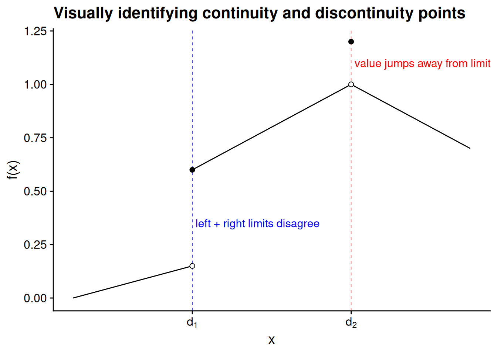
When a function is continuous at every point in its domain, we call it a continuous function.
Definition 4.4 We say that a function f : X \to Y is continuous if it is continuous at every point in its domain, X.
Equivalently, we say that f : X \to Y is continuous if for every domain point c \in X and every value \epsilon > 0, there exists a value \delta > 0 such that |f(x) - f(c)| < \epsilon for all x \in (c - \delta, c + \delta).
When a function f is continuous, every point close to c on the domain has a function value close to f(c). That’s the plain language interpretation of the second paragraph of Definition 4.4. If you think about it this way, you can see why the function illustrated in Figure 4.8 is not continuous. Even at values of x really really close to d_2, there’s going to be a substantial gap between the function values f(x) and f(d_2).
Lots of common functions are continuous. Here are just a few examples of functions you’re likely to run into that are continuous. Except where I note otherwise, each of the functions f : X \to \mathbb{R} below is continuous on any subset of the real numbers, X \subseteq \mathbb{R}.
- Identity function
- The function f(x) = x is continuous.
- Absolute value function
- The function f(x) = |x|, or equivalently f(x) = \begin{cases}-x & \text{if $x < 0$},\\x & \text{if $x \geq 0$,}\end{cases} is continuous.
- Linear functions
- Any function of the form f(x) = a + b x, where a and b are real numbers, is continuous.
- Polynomials
- Any function of the form \begin{aligned}f(x) &= c_0 + c_1 x + c_2 x^2 + \cdots c_k x^k \\ &= \sum_{n=0}^k c_n x^n,\end{aligned} where k is a natural number and each c_n is a real number, is called a polynomialA polynomial is a function of the form f(x) = c_0 + c_1 x + c_2 x^2 + \cdots + c_k x^k, where k is a natural number and each coefficient c_0, \ldots, c_k is a real number. and is continuous.
- Exponential functions
- Any function of the form f(x) = a^x, where a > 0, is continuous.
- Logarithmic functions
- Any function of the form f(x) = \log_b x, where b > 0, is continuous on any domain consisting of positive numbers, X \subseteq (0, \infty).
- Constant multiples of continuous functions
- Any function of the form f(x) = c g(x), where c is a real number and g is continuous, is continuous.
- Sums and products of continuous functions
- Any function of the form f(x) = g(x) + h(x) or f(x) = g(x) h(x), where g and h are continuous, is continuous.
- Division by a continuous function
- Any function of the form f(x) = 1 / g(x), where g is continuous and g(x) \neq 0 for all x \in X, is continuous.
- Compositions of continuous functions
- Any function of the form f(x) = g(h(x)), called the compositionConsider two functions h : X \to Y and g : Y \to Z. The composition of g and h is the function f : X \to Z defined by f(x) = g(h(x)). of g and h, is continuous if g and h are continuous.
Exercise 4.7 Consider the function that maps the lottery guess into expected winnings in our motivating example, W : [0, 100] \to [0, 10000], defined by W(g) = \frac{1}{N} \sum_{i=1}^N [10000 - (x_i - g)^2]. Prove that this function is continuous without explicitly taking its limits (i.e., without invoking what you found in Exercise 4.4).
Answer
The trick is to view W(g) as the sum of many polynomials. For each i = 1, \ldots, N, the function W_i(g) = 10000 - (x_i - g)^2 is a polynomial and is thus continuous. The sum of these polynomials, \sum_{i=1}^N W_i(g), is the sum of continuous functions and is thus continuous. As the constant multiple of a continuous function is itself continuous, we have that \frac{1}{N} \sum_{i=1}^N W_i(g) = \frac{1}{N} \sum_{i=1}^N [10000 - (x_i - g)^2] = W(g) is continuous.
Answer that uses Exercise 4.4
We proved in Exercise 4.4 that \lim_{h \to 0} W(g + h) = W(g) for all g. This is equivalent to saying that \lim_{g' \to g} W(g') = W(g) for all g (see Proposition 4.3), which in turn means W is continuous.
4.3 Differentiation
The derivative of a function, loosely speaking, is a measure of how steeply the function is increasing or decreasing at a particular point along its domain. This idea of steepness is easiest to see with linear functions.
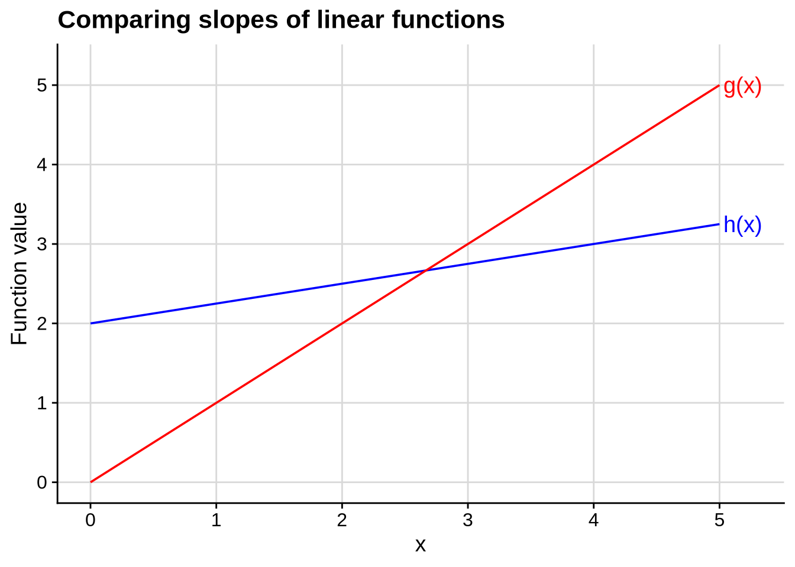
Between the two linear functions depicted in Figure 4.9, g(x) is steeper and h(x) is flatter. Specifically, the slopeFor a linear function, f(x) = \alpha + \beta x, the slope is the coefficient \beta. It can be calculated using the rise-over-run formula: for any distinct points x_1 and x_2 in the domain of f, \beta = \frac{f(x_1) - f(x_2)}{x_1 - x_2}. of g(x) is greater in magnitude than that of h(x). You can calculate the slope of a linear function using the “rise over run” formula. Given any two distinct points along the domain, x_1 and x_2, we calculate the slope by dividing the difference in function values (the “rise”) by the difference in domain values (the “run”): \text{slope} = \frac{f(x_1) - f(x_2)}{x_1 - x_2}. \tag{4.1}
For example, for the functions we’ve plotted in Figure 4.9, let’s compare the function values at x_1 = 4 to those at x_2 = 0. For the steeper function g, we have g(x_1) = g(4) = 4 and g(x_2) = g(0) = 0. Therefore, the slope of g is 1: \text{slope of $g$} = \frac{g(x_1) - g(x_2)}{x_1 - x_2} = \frac{g(4) - g(0)}{4} = \frac{4 - 0}{4 - 0} = 1. By contrast, the slope of the flatter function h is just 1/4: \text{slope of $h$} = \frac{h(x_1) - h(x_2)}{x_1 - x_2} = \frac{h(4) - h(0)}{4 - 0} = \frac{3 - 2}{4} = \frac{1}{4}.
Exercise 4.8 Calculate the slope of each function depicted in the figure below. What are the similarities and differences with the slopes of the functions depicted in Figure 4.9?
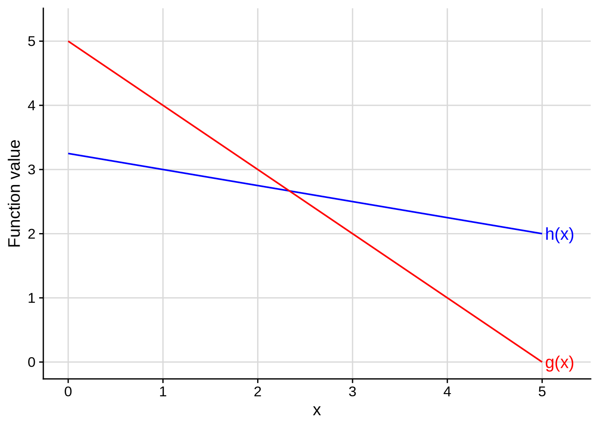
Answer
The slope of g is -1: \begin{aligned} \frac{g(5) - g(4)}{5 - 4} = \frac{0 - 1}{1} = -1. \end{aligned} The slope of h is -1/4: \begin{aligned} \frac{h(5) - h(1)}{5 - 1} = \frac{2 - 3}{4} = \frac{-1}{4}. \end{aligned} The major contrast with the functions from the earlier figure is that the slopes are now negative, reflecting the fact that these functions are decreasing instead of increasing. For decreasing functions, the “steeper” decrease is still the function whose slope is greater in absolute value.
Linear functions are convenient because they are equally “steep” at every point along their domain. Nonlinear functions, by definition, are not so convenient — their steepness varies across their domain. As an example, take a look at the nonlinear functions depicted in Figure 4.10: \begin{aligned} g(x) &= \frac{x^2}{5}; \\ h(x) &= 4 - \frac{(x - 5)^2}{5}. \end{aligned}
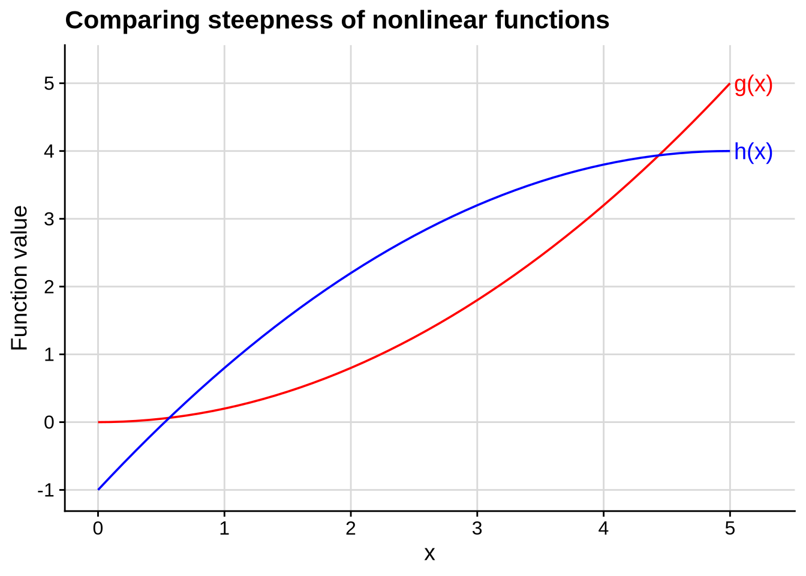
At the leftmost part of the figure, close to x = 0, the red function g(x) is nearly flat while the blue function h(x) is clearly increasing. By contrast, at the rightmost part of the figure, close to x = 5, we see that g(x) is clearly increasing while h(x) is nearly flat. We can glean that much through the eyeball test. But how can we quantify the “steepness” of each function at each point? Is there a precise way to say that a function is “nearly flat” at a particular point? And how can we identify the crossover point, where g(x) starts to increase more steeply than h(x) does?
One way to calculate the steepness of a nonlinear function at a particular point would be to use the “rise over run” formula (Equation 4.1). In other words, to gauge the steepness at some point c in the domain of the function, we pick a nearby point x and calculate \text{steepness at $c$} \approx \frac{f(x) - f(c)}{x - c}. The closer our chosen point x is to c, the better this approximation will be. For example, let’s calculate this approximation at c = 0 for the red function g(x) plotted in Figure 4.10. We can tell from the graph that the function is basically flat at c = 0, so we should get a “steepness” calculation close to 0.
You can do a few of these calculations yourself to see that the approximation gets closer to 0 as we pick approximation points closer to c = 0 along the x-axis… \begin{aligned} \frac{g(3) - g(0)}{3 - 0} = \frac{(3^2/5) - (0^2/5)}{3 - 0} = \frac{9/5}{3} = \frac{3}{5}; \\ \frac{g(2) - g(0)}{2 - 0} = \frac{(2^2/5) - (0^2/5)}{2 - 0} = \frac{4/5}{2} = \frac{2}{5}; \\ \frac{g(1) - g(0)}{1 - 0} = \frac{(1^2/5) - (0^2/5)}{1 - 0} = \frac{1/5}{1} = \frac{1}{5}; \end{aligned} …or you can look at Figure 4.11 for an animated illustration of the process.
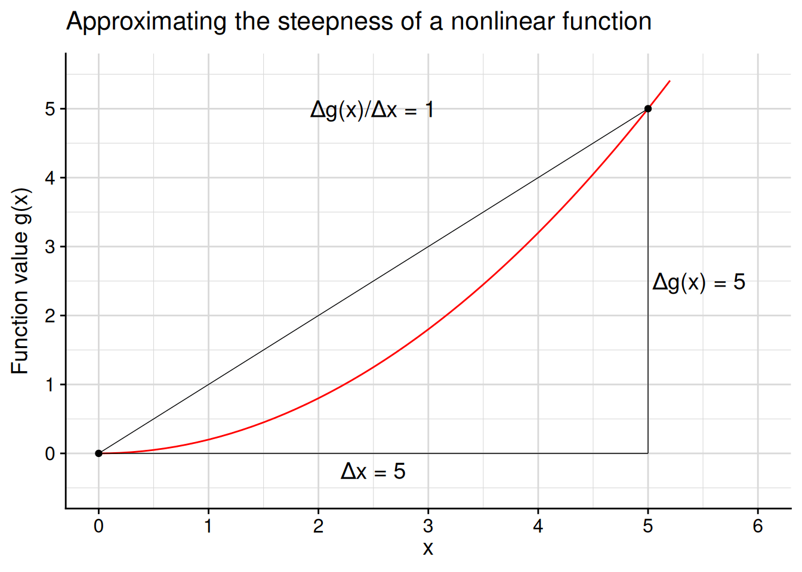
No matter how close of an approximation we take, there’s always a closer one to take. You should never be satisfied with the approximation \text{steepness at $c$} \approx \frac{f(x) - f(c)}{x - c}, because you could have calculated the even better approximation \text{steepness at $c$} \approx \frac{f(\frac{x + c}{2}) - f(c)}{\frac{x + c}{2} - c}.
\frac{x + c}{2} is the midpoint between x and c, which will always be closer to c than x itself is.
The only way to escape the we-could-have-gotten-even-closer complaint is to take the limit. We will formally define the derivative of a function as the limit of the rise-over-run calculation (Equation 4.1) as we choose approximation points x ever closer and closer to c, the point at which we want to calculate the steepness of the function.
Definition 4.5 (Derivative of a function) Consider the function f : X \to \mathbb{R}, where X \subseteq \mathbb{R}, and the point c \in X. The derivativeThe derivative of f at the point c, denoted f'(c), is a measure of how steeply the function is increasing or decreasing at that point. The formal definition of the derivative is that f'(c) = \lim_{x \to c} \frac{f(x) - f(c)}{x - c} = \lim_{h \to 0} \frac{f(c + h) - f(c)}{h}, provided that this limit exists. of f at c, denoted f'(c), is defined by the limit f'(c) = \lim_{x \to c} \frac{f(x) - f(c)}{x - c}, provided that this limit exists. When this limit exists, we say that f is differentiable at the pointA function f : X \to \mathbb{R} is differentiable at a point in its domain, c \in X, if the derivative f'(c) exists. We call f a differentiable function if it is differentiable at every point in its domain. c.
If f is differentiable at every point in its domain, we simply say that it is differentiable.
Tip 4.1: Alternative notation for derivatives
You will sometimes see the derivative written in the fractional form, \frac{d f(x)}{d x}. I don’t love this notation because it makes it hard to denote “the derivative of f at the specific point x = c.” You’re stuck with either the ambiguous-seeming \frac{d f(c)}{d x}, or with the clunky-seeming \left. \frac{d f(x)}{d x} \right|_{x = c}.
Economists are sometimes fond of using subscripts to denote derivatives, writing f_x(c) to denote the derivative of f at the specific point x = c. They do this more commonly for functions with multiple arguments, as we’ll see when we get to multivariable calculus. I only use this notation in the most dire of notational circumstances, and will never use it in this course.
Let’s use the formal definition to calculate the derivative of g(x) at x = 0, as we attempted to approximate in Figure 4.11. Remember that g(x) = x^2 / 5. Therefore, we have \begin{aligned} g'(0) &= \lim_{x \to 0} \frac{g(x) - g(0)}{x - 0} \\ &= \lim_{x \to 0} \frac{\frac{x^2}{5} - \frac{0^2}{5}}{x} \\ &= \lim_{x \to 0} \frac{x}{5} \\ &= 0. \end{aligned} This calculation confirms what we could see from the graph: the function g(x) is essentially flat at x = 0.
It would be rather tedious to go through this calculation for any individual point whose derivative we want to calculate. Luckily, we don’t have to do that. We can plug an arbitrary point c into the formula for a derivative to calculate g'(c): \begin{aligned} g'(c) &= \lim_{x \to c} \frac{g(x) - g(c)}{x - c} \\ &= \lim_{x \to c} \frac{\frac{x^2}{5} - \frac{c^2}{5}}{x - c} \\ &= \lim_{x \to c} \frac{x^2 - c^2}{5 (x - c)} \\ &= \lim_{x \to c} \frac{(x + c) (x - c)}{5 (x - c)} \\ &= \lim_{x \to c} \frac{x + c}{5} \\ &= \frac{2 c}{5}. \end{aligned} This formula confirms something we can see in Figure 4.10: g(x) gets steeper as we go further to the right along the x-axis. For example, the effective “slope” of the function at x = 1 is g'(x) = 2 / 5 = 0.4, whereas the effective slope at x = 5 is g'(x) = 2.
The calculation here relies on the rule that a^2 - b^2 = (a + b) (a - b) for any real numbers a and b.
Exercise 4.9 Take the other function plotted in Figure 4.10, h(x) = 4 - \frac{(x - 5)^2}{5}. Show that h'(x) = - \frac{2}{5} (x - 5) = 2 - \frac{2 x}{5}. Confirm that h'(x) decreases as x increases, then find the point in the domain at which g becomes steeper than h.
Answer
For any real number c, we have \begin{aligned} h'(c) &= \lim_{x \to c} \frac{h(x) - h(c)}{x - c} \\ &= \lim_{x \to c} \frac{[4 - \frac{(x - 5)^2}{5}] - [4 - \frac{(c - 5)^2}{5}]}{x - c} \\ &= \lim_{x \to c} \frac{(c - 5)^2 - (x - 5)^2}{5 (x - c)} \\ &= \lim_{x \to c} \frac{(c^2 - 10 c + 25) - (x^2 - 10 x + 25)}{5 (x - c)} \\ &= \lim_{x \to c} \frac{c^2 - 10 c - x^2 + 10 x}{5 (x - c)} \\ &= \lim_{x \to c} \left[\frac{10 (x - c)}{5 (x - c)} - \frac{x^2 - c^2}{5 (x - c)}\right] \\ &= \lim_{x \to c} \left[2 - \frac{(x + c) (x - c)}{5 (x - c)}\right] \\ &= \lim_{x \to c} \left[2 - \frac{x + c}{5}\right] \\ &= 2 - \frac{2 c}{5}. \end{aligned}
To confirm that h'(x) decreases as x increases, suppose x < y. We have h'(y) - h'(x) = \left[2 - \frac{2y}{5}\right] - \left[2 - \frac{2x}{5}\right] = \frac{2 (x - y)}{5} < 0 and thus h'(y) < h'(x).
Finally, let’s find the crossover point at which g becomes steeper than h, i.e., at which g'(x) > h'(x). We know that g'(x) = \frac{2x}{5} and that h'(x) = 2 - \frac{2x}{5}. The statement g'(x) > h'(x) is therefore equivalent to \frac{2x}{5} > 2 - \frac{2x}{5}, which in turn is equivalent to \frac{4x}{5} > 2. This statement in turn is equivalent to x > 2 \cdot \frac{5}{4} = \frac{10}{4} = 2.5, so the crossover point is x = 2.5.
Exercise 4.10 Let f : \mathbb{R} \to \mathbb{R} be a quadratic function, meaning there exist real numbers a, b, and c such that f(x) = a x^2 + b x + c. Show that f'(x) = 2 a x + b.
Hint: The calculations will be very similar to the ones from Exercise 4.9, as the function h(x) there is itself a quadratic function.
Answer
For any real number d, we have \begin{aligned} f'(d) &= \lim_{x \to d} \frac{f(x) - f(d)}{x - d} \\ &= \lim_{x \to d} \frac{[a x^2 + b x + c] - [a d^2 + b d + c]}{x - d} \\ &= \lim_{x \to d} \frac{a (x^2 - d^2) + b (x - d)}{x - d} \\ &= \lim_{x \to d} \frac{a (x + d) (x - d) + b (x - d)}{x - d} \\ &= \lim_{x \to d} [a (x + d) + b] \\ &= 2 a d + b. \end{aligned}
There’s another way to define the derivative that is sometimes more convenient to work with. In this alternative definition, we define the “rise” in terms of f(c + h) - f(c) and the “run” in terms of the increment h, which may be positive or negative. We then consider the limit as this increment becomes smaller and smaller in magnitude: f'(c) = \lim_{h \to 0} \frac{f(c + h) - f(c)}{h}. To be clear, both definitions will always lead you to the same answer — which one you use is ultimately a matter of which way you find easiest to solve the problem at hand.
Proposition 4.4 (Alternative definition of derivative) Consider the function f : X \to \mathbb{R}, where X \subseteq \mathbb{R}, and the point c \in X. The derivative f'(c) exists and is equal to \lim_{h \to 0} \frac{f(c + h) - f(c)}{h} if and only if this limit exists.
Proof. Immediate from Proposition 4.3.
As an example, we can use the alternative definition to calculate the derivative of the function g(x) plotted in Figure 4.10: \begin{aligned} g'(c) &= \lim_{h \to 0} \frac{g(c + h) - g(c)}{h} \\ &= \lim_{h \to 0} \frac{\frac{(c + h)^2}{5} - \frac{c^2}{5}}{h} \\ &= \lim_{h \to 0} \frac{(c + h)^2 - c^2}{5 h} \\ &= \lim_{h \to 0} \frac{(c^2 + 2 c h + h^2) - c^2}{5h} \\ &= \lim_{h \to 0} \frac{2 c h + h^2}{5 h} \\ &= \lim_{h \to 0} \frac{2 c + h}{5} \\ &= \frac{2 c}{5}. \end{aligned} I personally find this way easier for this particular problem. You might find the other way easier. Either way, we end up in the same place, with g'(c) = 2c / 5.
Exercise 4.11 Redo Exercise 4.10 using the alternative formula for a derivative.
Answer
Let f(x) = a x^2 + b x + c, and consider any real number d. We have \begin{aligned} f'(d) &= \lim_{h \to 0} \frac{f(d + h) - f(d)}{h} \\ &= \lim_{h \to 0} \frac{[a (d + h)^2 + b (d + h) + c] - [a d^2 + b d + c]}{h} \\ &= \lim_{h \to 0} \frac{[a d^2 + 2 a d h + a h^2 + b d + b h + c] - [a d^2 + b d + c]}{h} \\ &= \lim_{h \to 0} \frac{2 a d h + a h^2 + b h}{h} \\ &= \lim_{h \to 0} [2 a d + a h + b] \\ &= 2 a d + b. \end{aligned}
You never need to bother trying to calculate the derivative of a function at a point where the function is not continuous — it won’t exist. In logic-speak: if f is not continuous at c, then f'(c) does not exist. Or, equivalently (never forget the contrapositive!), if f'(c) exists, then f is continuous at c.
Theorem 4.1 (Differentiable implies continuous) Consider a function f : X \to \mathbb{R}, where X \subseteq \mathbb{R}, and the point c \in X. If f is differentiable at c, then f is continuous at c.
Proof. Suppose f is differentiable at c, meaning there is a real number y such that \lim_{x \to c} \frac{f(x) - f(c)}{x - c} = y. Using the properties of function limits (Proposition 4.2), we then have \begin{aligned} \lim_{x \to c} f(x) &= \lim_{x \to c} [f(x) - f(c) + f(c)] \\ &= f(c) + \lim_{x \to c} [f(x) - f(c)] \\ &= f(c) + \lim_{x \to c} \left[\frac{f(x) - f(c)}{x - c} \cdot (x - c)\right] \\ &= f(c) + \underbrace{\left(\lim_{x \to c} \frac{f(x) - f(c)}{x - c}\right)}_{ = y} \cdot \underbrace{\left(\lim_{x \to c} [x - c]\right)}_{= 0} \\ &= f(c) + y \cdot 0 \\ &= f(c), \end{aligned} so f is continuous at c.
I hope you noticed that Theorem 4.1 is merely an “if” statement, not an “if and only if” statement. The theorem tells us that every differentiable function is continuous, but it says nothing about whether every continuous function is differentiable. In fact, there are continuous functions that are not differentiable. For example, take the absolute value function, f(x) = |x| at the point c = 0. The derivative does not exist because the relevant left- and right-hand limits do not agree: \lim_{x \to 0^-} \frac{f(x) - f(0)}{x - 0} = \lim_{x \to 0^-} \frac{-x}{x} = -1 \neq 1 = \lim_{x \to 0^+} \frac{x}{x} = \lim_{x \to 0^+} \frac{f(x) - f(0)}{x - 0}.
The most common type of non-differentiability in a continuous function that you’ll run into is a “kink” in the graph of the function — a point where the direction of the function appears to change sharply instead of smoothly. The absolute value function illustrates this type of non-differentiability.
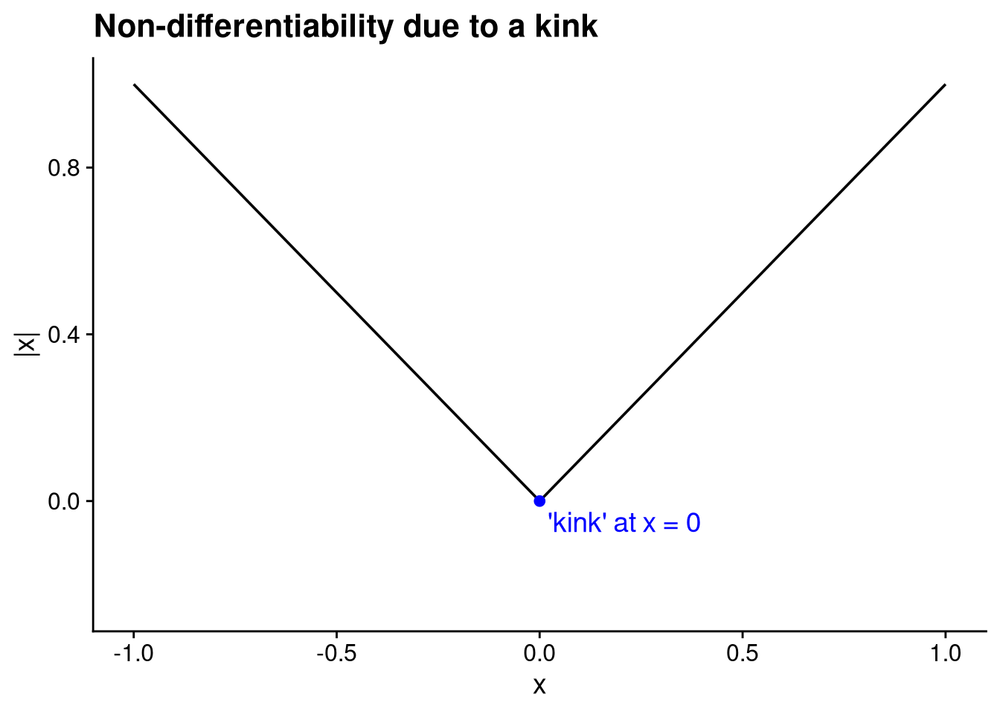
Another source of non-differentiability is when the function is so steep that its graph approaches a vertical line. As an example, take the square root function, f(x) = \sqrt{x}, evaluated at the point c = 0. The “rise over run” limit here becomes infinitely large as x \to 0: \begin{aligned} \lim_{x \to 0} \frac{f(x) - f(0)}{x - 0} &= \lim_{x \to 0} \frac{\sqrt{x}}{x} \\ &= \lim_{x \to 0} \frac{1}{\sqrt{x}} \\ &= \infty. \end{aligned}
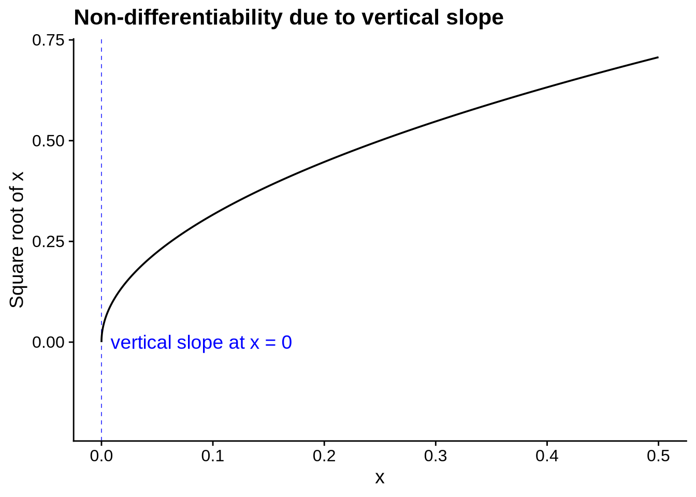
4.3.1 Derivatives of common functions
I take derivatives all the time in my day job as a formal theorist, yet only rarely do I find myself explicitly taking the limit from Definition 4.5. Many of the functions that commonly arise in statistics and game theory have derivatives of known forms. Here are the most important ones you need to know.
- Linear functions
- Any function of the form f(x) = a + b x, where a and b are real numbers, has a derivative of b at all points in its domain: f'(x) = b.
- Power functions
- Any function of the form f(x) = x^a, where a is a real number, has a derivative of f'(x) = a x^{a - 1}.
- Natural exponent
- The function f(x) = e^x, where e is Euler’s number (approximately 2.718), has a derivative of f'(x) = e^x. That’s not a typo—the natural exponent is its own derivative. That is one of the many reasons why Euler’s number is special.
- Natural logarithm
- The function f(x) = \log x has a derivative of f'(x) = 1/x.
Exercise 4.12 (Derivative of a constant function) A constant function is a function of the form f(x) = y, where y is a constant real number. Without taking an explicit limit, prove that f'(x) = 0 for all x.
Answer
A constant function is a linear function with slope 0: f(x) = y = y + 0x. Because the derivative of any linear function is its slope, we have f'(x) = 0.
4.3.2 Properties of derivatives
Using a few rules in combination with the derivatives of common functions from above, we can calculate the derivatives of most functions we run into in practice without explicitly taking limits of the rise-over-run ratio.
If we take a function and multiply it by a constant, the derivative of the resulting function is the same multiple of the original derivative. This is the constant multiple ruleIf g(x) = c f(x), where c is a constant real number, then g'(x) = c f'(x)..
Proposition 4.5 (Constant multiple rule) Let f : X \to \mathbb{R} be differentiable, where X \subseteq \mathbb{R}. Define the function g : X \to \mathbb{R} by g(x) = c f(x), where c is a constant real number. For all x \in X, g'(x) = c f'(x).
Proof. For any x \in X, we have \begin{aligned} \lim_{h \to 0} \frac{g(x + h) - g(x)}{h} &= \lim_{h \to 0} \frac{c f(x + h) - c f(x)}{h} \\ &= c \lim_{h \to 0} \frac{f (x + h) - f(x)}{h} \\ &= c f'(x). \end{aligned}
For example, we can use the constant multiple rule to find the derivative of any logarithmic function, not just the natural logarithm. Let f(x) = \log_b(x), where b > 0 and b \neq 1. Using the base change formula from Proposition 3.5, we know that f(x) = \log_b(x) = \frac{\log(x)}{\log(b)} = \frac{1}{\log(b)} \cdot \log(x). In other words, the logarithm with base b is just a constant multiple of the natural logarithm. Using this fact, we can find the derivative: f'(x) = \frac{1}{\log(b)} \cdot \frac{d \log(x)}{d x} = \frac{1}{\log(b)} \cdot \frac{1}{x} = \frac{1}{x \log(b)}.
Another convenient property is that the derivative of the sum is equal to the sum of the derivatives. You’ll end up using the sum ruleIf h(x) = f(x) + g(x), then h'(x) = f'(x) + g'(x). so often that you stop thinking about it.
Proposition 4.6 (Sum rule) Let f : X \to \mathbb{R} and g : X \to \mathbb{R} be differentiable, where X \subseteq \mathbb{R}. Define the function h : X \to \mathbb{R} by h(x) = f(x) + g(x). For all x \in X, h'(x) = f'(x) + g'(x).
Proof. For any x \in X, we have \begin{aligned} \lim_{t \to 0} \frac{h(x + t) - h(x)}{t} &= \lim_{t \to 0} \frac{[f(x + t) + g(x + t)] - [f(x) + g(x)]}{t} \\ &= \lim_{t \to 0} \left[\frac{f(x + t) - f(x)}{t} + \frac{g(x + t) - g(x)}{t}\right] \\ &= \lim_{t \to 0} \frac{f(x + t) - f(x)}{t} + \lim_{t \to 0} \frac{g(x + t) - g(x)}{t} \\ &= f'(x) + g'(x). \end{aligned}
Here are a few exercises to illustrate the usefulness of the constant multiple rule and the sum rule.
Exercise 4.13 (Derivative of a linear combination of functions) Let f : X \to \mathbb{R} and g : X \to \mathbb{R} be differentiable, where X \subseteq \mathbb{R}. Let \alpha \in \mathbb{R} and \beta \in \mathbb{R} be constants. Define the function h : X \to \mathbb{R} by h(x) = \alpha f(x) + \beta g(x). Use the constant rule and the sum rule to show that h'(x) = \alpha f'(x) + \beta g'(x).
Answer
This is one of those cases where it’s convenient to use the fractional notation for a derivative (see Tip 4.1). We have \begin{aligned} \frac{d h(x)}{d x} &= \frac{d}{dx} \left[\alpha f(x) + \beta g(x)\right] \\ &= \frac{d}{dx} \left[\alpha f(x)\right] + \frac{d}{dx} \left[\beta g(x)\right] \\ &= \alpha \frac{d f(x)}{d x} + \beta \frac{d g(x)}{d x}, \end{aligned} where the first equality uses our definition of h(x), the second uses the sum rule, and the third uses the constant multiple rule twice.
Exercise 4.14 (Derivative of a finite sum of functions) Let N be a natural number. For each natural number n \leq N, let f_n : X \to \mathbb{R} be differentiable, where X \subseteq \mathbb{R}. Define the function g : X \to \mathbb{R} by g(x) = \sum_{n=1}^N f_n(x). Use the sum rule in a proof by induction (see Section 2.2.4) to prove that g'(x) = \sum_{n=1}^N f_n'(x).
Answer
Our goal is to prove the claim for all natural numbers N. For the base step, we must show that it is true for N = 1. The claim is trivial in this case, as we have g(x) = f_1(x) and therefore g'(x) = f_1'(x) = \sum_{n=1}^1 f_n'(x).
For the induction step, we assume that the claim is true for N = k, so that \frac{d}{dx} \left[\sum_{n=1}^k f_n(x)\right] = \sum_{n=1}^k f_n'(x), then show that the claim must be true for N = k + 1 as well. Define g(x) = \sum_{n=1}^{k+1} f_n(x). By definition, we have g(x) = f_{k+1}(x) + \sum_{n=1}^k f_n(x). Using the sum rule, we have g'(x) = f_{k+1}'(x) + \frac{d}{dx} \left[\sum_{n=1}^k f_n(x)\right]. Using our assumption that the claim is true for N = k, we then have \begin{aligned} g'(x) = f_{k+1}'(x) + \sum_{n=1}^k f_n'(x) = \sum_{n=1}^{k+1} f_n'(x), \end{aligned} which concludes the induction step by establishing that the claim is true for N = k + 1 as well.
Exercise 4.15 (Derivative of a polynomial) Let f : X \to \mathbb{R} be a polynomial, so that \begin{aligned} f(x) = c_0 + c_1 x + \cdots + c_k x^k = \sum_{n=0}^k c_n x^n \end{aligned} for some natural number k and real-valued coefficients c_0, \ldots, c_k. Use the constant multiple rule, the derivative of a power function, and the result of Exercise 4.14 to prove that f'(x) = c_1 + 2 c_2 x + \cdots + k c_k x^{k=1} = \sum_{n=0}^k n c_n x^{n-1}.
Answer
Using Exercise 4.14, we have \begin{aligned} f'(x) = \sum_{n=0}^k \frac{d}{dx} \left[c_n x^{n}\right]. \end{aligned} Using the constant multiple rule, we then have \begin{aligned} f'(x) = \sum_{n=0}^k c_n \frac{d}{dx} \left[x^{n}\right]. \end{aligned} Finally, using the derivative of a power function, we have \begin{aligned} f'(x) = \sum_{n=0}^k c_n \left[n x^{n-1}\right], \end{aligned} proving the claim.
Unfortunately for us, derivatives of products don’t work quite as intuitively as derivatives of sums. In general, it is not true that the derivative of f(x) g(x) equals f'(x) g'(x). As an illustration, think about the quadratic function h(x) = x^2 = x \cdot x, which decreases up to x = 0 and then increases thereafter. If it were true that the derivative of the product equals the product of the derivatives, then we would have h(x) = 1 \cdot 1 = 1 (because h(x) = x \cdot x and the derivative of the identity function is 1), falsely implying that the quadratic function is actually linear.
All that said, we still have a convenient formula to calculate the derivative of a product — it’s just not as convenient as the derivative of a sum. The product ruleIf h(x) = f(x) g(x), then h'(x) = f(x) g'(x) + f'(x) g(x). to take the derivative of f(x) g(x) essentially breaks the problem into two parts. First we treat f(x) as if it were a constant and take the derivative of g(x), then we do the reverse, and finally we add the two results together.
Proposition 4.7 (Product rule) Let f : X \to \mathbb{R} and g : X \to \mathbb{R} be differentiable, where X \subseteq \mathbb{R}. Define the function h : X \to \mathbb{R} by h(x) = f(x) \cdot g(x). For all x \in X, \begin{aligned} h'(x) = f(x) g'(x) + f'(x) g(x). \end{aligned}
Proof. Take any x \in X. Differentiability of f implies continuity of f (per Theorem 4.1) and thus \lim_{t \to 0} f(x + t) = f(x). Consequently, \begin{aligned} & \lim_{t \to 0} \frac{h(x + t) - h(x)}{t} \\ &= \lim_{t \to 0} \frac{f(x + t) g(x + t) - f(x) g(x)}{t} \\ &= \lim_{t \to 0} \frac{f(x + t) g(x + t) - f(x + t) g(x) + f(x + t) g(x) - f(x) g(x)}{t} \\ &= \lim_{t \to 0} \frac{f(x + t) [g(x + t) - g(x)]}{t} + \lim_{t \to 0} \frac{[f(x + t) - f(x)] g(x)}{t} \\ &= \left[\lim_{t \to 0} f(x + t)\right] \cdot \left[\lim_{t \to 0} \frac{g(x + t) - g(x)}{t}\right] + \left[\lim_{t \to 0} \frac{f(x + t) - f(x)}{t}\right] \cdot g(x) \\ &= f(x) g'(x) + f'(x) g(x), \end{aligned} as claimed.
Going back to our example of the quadratic function h(x) = x^2, proper use of the product rule confirms that h'(x) = 2x. Let f(x) = g(x) = x, so that f'(x) = g'(x) = 1 and h(x) = f(x) \cdot g(x). The product rule then gives us \begin{aligned} h'(x) &= f(x) g'(x) + f'(x) g(x) \\ &= x \cdot 1 + 1 \cdot x \\ &= 2x. \end{aligned}
Now let’s get some more practice with the product rule through some exercises.
Exercise 4.16 (Product rule applications) Find the derivatives of the following functions.
f(x) = (2x + 1) (x - 3).
f(x) = x e^x.
f(x) = e^{2x}.
f(x) = e^x \cdot \log(x) \cdot x^3.
Answers
You could solve this one by observing that f(x) = 2x^2 - 5x - 3, then applying the formula for the derivative of a polynomial (see Exercise 4.15) to yield f'(x) = 4 x - 5. We get to the same place if we instead use the product rule: \begin{aligned} f'(x) &= (2x + 1) \cdot 1 + 2 \cdot (x - 3) \\ &= 2x + 1 + 2x - 6 \\ &= 4x - 5. \end{aligned}
Let g(x) = x so that g'(x) = 1, and let h(x) = e^x so that h'(x) = e^x. We have \begin{aligned} f'(x) &= g(x) h'(x) + g'(x) h(x) \\ &= x \cdot e^x + 1 \cdot e^x \\ &= (x + 1) e^x. \end{aligned}
Let g(x) = h(x) = e^x so that g'(x) = h'(x) = e^x. We have \begin{aligned} f'(x) &= g(x) h'(x) + g'(x) h(x) \\ &= e^x \cdot e^x + e^x \cdot e^x \\ &= e^{2x} + e^{2x} \\ &= 2 e^{2x}. \end{aligned}
This one makes us use the product rule twice. We have \begin{aligned} f'(x) &= \frac{d}{dx} \left[e^x \cdot \log(x) \cdot x^3\right] \\ &= e^x \cdot \left[\frac{d}{dx} \left(\log(x) \cdot x^3\right)\right] + \left[\frac{d}{dx} e^x\right] \cdot \left[\log(x) \cdot x^3\right] \\ &= e^x \cdot \left[\log(x) \cdot \left(\frac{d}{dx} x^3\right) + \left(\frac{d}{dx} \log(x)\right) \cdot x^3\right] + \left[\frac{d}{dx} e^x\right] \cdot \left[\log(x) \cdot x^3\right] \\ &= e^x \cdot \left[\log(x) \cdot (3 x^2) + \left(\frac{1}{x}\right) \cdot x^3\right] + \left[e^x \cdot \log(x) \cdot x^3\right] \\ &= 3 e^x \cdot \log(x) \cdot x^2 + e^x \cdot x^2 + e^x \cdot \log(x) \cdot x^3. \end{aligned} This example is an illustration of a generalization of the product rule: \frac{d}{dx} [f(x) \cdot g(x) \cdot h(x)] = f(x) g(x) h'(x) + f(x) g'(x) h(x) + f'(x) g(x) h(x). I’ll leave it to you to prove that general claim.
Exercise 4.17 (Derivative of the square of a function) Let f : X \to \mathbb{R} be differentiable, where X \subseteq \mathbb{R}. Define the function g : X \to \mathbb{R} by g(x) = f(x)^2. Using the product rule, prove that g'(x) = 2 f'(x) f(x).
Answer
We have g(x) = f(x) \cdot f(x), so the product rule implies g'(x) = f(x) f'(x) + f'(x) f(x) = 2 f'(x) f(x).
The quotient ruleIf h(x) = f(x) / g(x), then h'(x) = \frac{f'(x) g(x) - f(x) g'(x)}{g(x)^2}. for functions in the form \frac{f(x)}{g(x)} is unfortunately a bit trickier to remember. If you have to Google this one every time you use it, don’t worry — you’re not alone.
Proposition 4.8 (Quotient rule) Let f : X \to \mathbb{R} and g : X \to \mathbb{R} \setminus \{0\} be differentiable, where X \subseteq \mathbb{R}. Define the function h : X \to \mathbb{R} by h(x) = \frac{f(x)}{g(x)}. For all x \in X, h'(x) = \frac{f'(x) g(x) - f(x) g'(x)}{g(x)^2}.
TipCodomain of the denominator function
You might notice that the codomain of g is specified to be the set \mathbb{R} \setminus \{0\}, meaning that g(x) may in principle be any number other than 0. This is just to ensure that \frac{f(x)}{g(x)} is well-defined, avoiding any kind of problems with dividing by 0.
I’m not going to prove the quotient rule here — you’ll do that yourself in Exercise 4.24 below, once you’ve got one more handy rule for differentiation in hand.
Before then, let’s work through some practice with the quotient rule. If you use it enough, maybe you’ll actually start to remember it?
This was certainly the case for me writing my job market paper (Kenkel 2023), which made such extensive use of the quotient rule that I finally stopped having to Google it after a year or so working on the paper.
Exercise 4.18 (Contest success function) A common tool in formal models of conflict is the contest success function, f(x) = \frac{\alpha x}{\alpha x + y}. You can think of x here as the amount of resources that I’m devoting toward the conflict, y > 0 as the amount of resources that my enemy has devoted, and \alpha > 0 as the “force multiplier” on my effort (how much bang for the buck I’m getting). The output of the function represents my probability of winning the conflict, as a function of the amount of resources I devote.
Use the quotient rule to derive f'(x).
The derivative f'(x) represents approximately how much my chance of victory increases with each unit of resources I expend. Imagine that I don’t want to put in a unit of resources that gets me less than a 1% increase in the chance of victory. Then what’s the largest value of x that I’d be willing to choose? (The answer will depend on the values of \alpha and y.)
Answer
Think of f(x) = g(x) / h(x) where g(x) = \alpha x and h(x) = \alpha x + y. Then, using the quotient rule, we have \begin{aligned} f'(x) &= \frac{g'(x) h(x) - g(x) h'(x)}{h(x)^2} \\ &= \frac{\alpha (\alpha x + y) - (\alpha x) \alpha}{(\alpha x + y)^2} \\ &= \frac{\alpha y}{(\alpha x + y)^2}. \end{aligned}
The second question essentially asks us to find the value of x that solves f'(x) = 0.01: \begin{aligned} f'(x) = 0.01 &\quad\Leftrightarrow\quad \frac{\alpha y}{(\alpha x + y)^2} = 0.01 \\ &\quad\Leftrightarrow\quad (\alpha x + y)^2 = 100 \alpha y \\ &\quad\Leftrightarrow\quad \alpha x + y = 10 \sqrt{\alpha y} \\ &\quad\Leftrightarrow\quad x = \frac{10 \sqrt{\alpha y} - y}{\alpha}. \end{aligned}
Exercise 4.19 (Derivative of a conditional probability) Let X be a random variable that has a binomial distribution with n = 2 and probability parameter p, so that we have \begin{aligned} \Pr(X = 0) &= (1 - p)^2, \\ \Pr(X = 1) &= 2 p (1 - p), \\ \Pr(X = 2) &= p^2. \end{aligned} The conditional probability \Pr(X = 2 \mid X \geq 1) is equal to \begin{aligned} \Pr(X = 2 \mid X \geq 1) = \frac{\Pr(X = 2)}{\Pr(X = 1) + \Pr(X = 2)} = \frac{p^2}{2 p (1 - p) + p^2}. \end{aligned} Taking this conditional probability to be a function of the parameter p, find its derivative and show that the derivative is positive for all p \in (0, 1].
Answer
Defining the function f(p) = \frac{p^2}{2p (1 - p) + p^2} = \frac{p^2}{2p - p^2}, we have \begin{aligned} f'(p) &= \frac{2p (2p - p^2) - p^2 (2 - 2p)}{(2p - p^2)^2} \\ &= \frac{4 p^2 - 2 p^3 - 2 p^2 + 2 p^3}{(2p - p^2)^2} \\ &= \frac{p^2}{(2p - p^2)^2}. \end{aligned} We have p^2 > 0 and (2p - p^2)^2 > 0 for all p \neq 0, and therefore f'(p) > 0 for all p \in (0, 1].
What do we do when we run into a function that isn’t obviously a sum or product or quotient of some other function whose derivative we know how to take? For example, think about the function h(x) = e^{-(x - \mu)^2}, a close cousin of the probability density function of the normal distribution with mean \mu and variance 1. We know that the derivative of e^x is e^x. And by observing that -(x - \mu)^2 = -[x^2 - 2 x \mu + \mu^2] = 2 x \mu - x^2 - \mu^2, we know that its derivative is 2 (\mu - x). Is there a way we can put these together to figure out the derivative of h(x)?
The chain ruleIf h(x) = f(g(x)), then h'(x) = f'(g(x)) \cdot g'(x). helps us deal with situations like this one. Specifically, suppose we have a function of the form h(x) = f(g(x)), where f and g are each differentiable. Going back to our example, if we define f(x) = e^x and g(x) = -(x - \mu)^2, then we have \begin{aligned} h(x) = e^{-(x - \mu)^2} = e^{g(x)} = f(g(x)). \end{aligned} In other words, h is the composition of f and g (see the list of function types in Section 4.2.2).
Proposition 4.9 (Chain rule) Let f : Y \to \mathbb{R} and g : X \to Y be differentiable, where X \subseteq \mathbb{R} and Y \subseteq \mathbb{R}. Define the composition h by h(x) = f(g(x)). For all x \in X, h'(x) = f'(g(x)) \cdot g'(x).
Using the chain rule with our example of h(x) = e^{-(x - \mu)^2}, we can calculate the derivative: \begin{aligned} h'(x) &= f'(g(x)) \cdot g'(x) \\ &= f'(-(x - \mu)^2) \cdot g'(x) \\ &= e^{-(x - \mu)^2} \cdot 2 (\mu - x) \\ &= 2 (\mu - x) e^{-(x - \mu)^2}. \end{aligned} If we look at the graph of this function, we see that it increases on (-\infty, \mu) and decreases on (\mu, \infty).
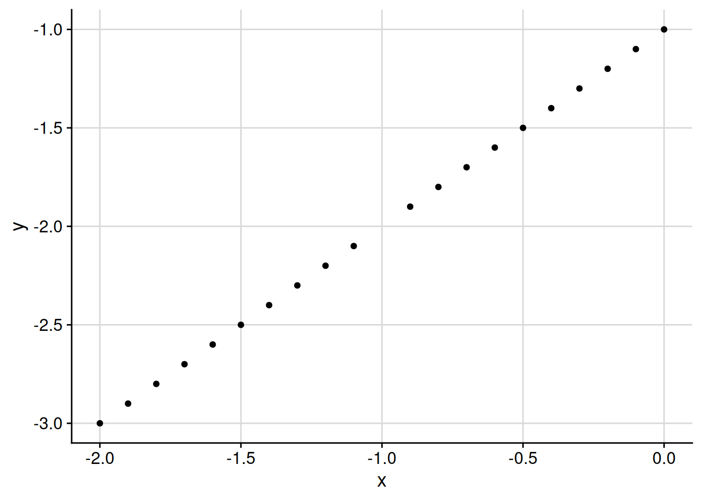
Our expression for the derivative provides further confirmation that the function increases up to x = \mu and decreases thereafter. The key thing to observe is that e^z > 0 for all real numbers z. Therefore, if x < \mu, then we have h'(x) = 2 \underbrace{(\mu - x)}_{> 0} \underbrace{e^{-(x - \mu)^2}}_{> 0} > 0. In instead x > \mu, then we have h'(x) = 2 \underbrace{(\mu - x)}_{< 0} \underbrace{e^{-(x - \mu)^2}}_{> 0} < 0.
Let’s return to our motivating example of the statistical lottery (see Section 4.1). Remember that the expected winnings for guessing g \in [0, 100] is given by the function \begin{aligned} W(g) = \frac{1}{N} \sum_{i=1}^N \left[10000 - (x_i - g)^2\right]. \end{aligned} We finally have everything we need to calculate the derivative of this function. First, using the constant multiple rule, \begin{aligned} W'(g) = \frac{1}{N} \cdot \frac{d}{dg} \left\{\sum_{i=1}^N \left[10000 - (x_i - g)^2\right]\right\}. \end{aligned} Then, using our extension of the sum rule to any finite sum (see Exercise 4.14), \begin{aligned} W'(g) = \frac{1}{N} \sum_{i=1}^N \frac{d}{dg} \left[10000 - (x_i - g)^2\right]. \end{aligned} Again applying the sum rule and the constant multiple rule, \begin{aligned} W'(g) &= \frac{1}{N} \sum_{i=1}^N \left\{\underbrace{\frac{d}{dg} [10000]}_{=0} - \frac{d}{dg} \left[(x_i - g)^2\right]\right\} \\ &= \frac{-1}{N} \sum_{i=1}^N \frac{d}{dg} \left[(x_i - g)^2\right]. \end{aligned} At this point we can apply the chain rule to each individual component of the sum, letting a(g) = g^2 be the “outer” function (with derivative a'(g) = 2g) and b_i(g) = x_i - g be the “inner” function (with derivative b_i'(g) = -1): \begin{aligned} W'(g) &= \frac{-1}{N} \sum_{i=1}^N \frac{d}{dg} [a(b(g))] \\ &= \frac{-1}{N} \sum_{i=1}^N a'(b(g)) \cdot b'(g) \\ &= \frac{-1}{N} \sum_{i=1}^N [2 (x_i - g)] \cdot (-1) \\ &= \frac{2}{N} \sum_{i=1}^N [x_i - g] \\ &= \frac{2}{N} \left[\sum_{i=1}^N x_i - N g\right]. \end{aligned}
We are finally — finally! — ready to show, beyond a shadow of a mathematical doubt, that the winnings-maximizing guess in the statistical lottery game is g = \bar{x}, the average of the values displayed on the lottery balls. Remember that the sample mean \bar{x} is defined as \bar{x} = \frac{1}{N} \sum_{i=1}^N x_i. Therefore, we have \begin{aligned} W'(g) &= \frac{2}{N} \left[\sum_{i=1}^N x_i - N g\right] \\ &= 2 \left[\frac{1}{N} \sum_{i=1}^N x_i - g\right] \\ &= 2 (\bar{x} - g). \end{aligned} Here’s how we can use this expression to infer that our best guess is g = \bar{x}:
Consider any guess below the sample mean, g < \bar{x}. For any such guess, we have W'(g) > 0. This means expected winnings are increasing at g — i.e., you could expect to win more by guessing slightly more than g.
Consider any guess above the sample mean, g > \bar{x}. Now we are in the opposite situation, with W'(g) < 0. This means expected winnings are decreasing at g — i.e., you could expect to win more by guessing slightly less than g.
Because the function increases up to g = \bar{x} and decreases thereafter, we conclude that the optimal guess is g = \bar{x}.
You might also have noticed that W'(\bar{x}) = 0. You might suspect that an even simpler proof of the claim would be to observe that this is the only guess for which the derivative of the expected winnings function is 0. That’s almost true, but we need to do a bit more to get there — as we will in Chapter 5 below.
Before we move on, let’s do some exercises to get more practice with the chain rule.
Exercise 4.20 (Derivative of an exponential function) Let b be a positive constant, and define the function f(x) = b^x. Using the chain rule, show that f'(x) = b^x \cdot \log(b).
Hint: Start out by using the fact that b = e^{\log(b)}.
Answer
We have f(x) = b^x = (e^{\log(b)})^x = e^{\log(b) \cdot x}. Define the “inner” function h(x) = \log(b) \cdot x (with derivative h'(x) = \log(b)) and the “outer” function g(x) = e^x (with derivative g'(x) = e^x), so that we have f(x) = e^{\log(b) \cdot x} = e^{h(x)} = g(h(x)). Then, using the chain rule, we have \begin{aligned} f'(x) &= g'(h(x)) \cdot h'(x) \\ &= g'(\log(b) \cdot x) \cdot h'(x) \\ &= e^{\log(b) \cdot x} \cdot \log(b) \\ &= b^x \cdot \log(b). \end{aligned}
Exercise 4.21 (Derivative of the exponential CDF) For all x \geq 0, the cumulative distribution function of the exponential distribution with rate parameter \lambda > 0 is F(x) = 1 - e^{-\lambda x}. Characterize the probability density function of this distribution by finding the derivative of the cumulative distribution function.
Answer
Let’s first just look at e^{-\lambda x}. We can think of this as a composition of the “outer” function g(x) = e^x (with derivative g'(x) = e^x) and the “inner” function h(x) = -\lambda x (with derivative h'(x) = -\lambda). Therefore, its derivative is g'(h(x)) \cdot h'(x) = g'(-\lambda x) \cdot h'(x) = e^{-\lambda x} \cdot -\lambda.
Returning to the full expression for the CDF and applying the sum rule, we have \begin{aligned} F'(x) &= \frac{d}{dx} \left[1 - e^{-\lambda x}\right] \\ &= \left[\frac{d}{dx} (1) - \frac{d}{dx} \left(e^{-\lambda x}\right) \right] \\ &= \left[0 - e^{-\lambda x} \cdot -\lambda\right] \\ &= \lambda e^{-\lambda x}. \end{aligned}
Exercise 4.22 (Derivative of the logistic CDF) For all x \in \mathbb{R}, the cumulative distribution function of the logistic distribution is F(x) = \frac{1}{1 + e^{-x}}. Characterize the probability density function of this distribution by finding the derivative of the cumulative distribution function.
Answer
We have F(x) = (1 + e^{-x})^{-1}. By repeatedly applying the chain rule, we have \begin{aligned} F'(x) &= (-1) (1 + e^{-x})^{-2} \cdot \frac{d}{dx} [1 + e^{-x}] \\ &= -(1 + e^{-x})^{-2} \cdot \frac{d}{dx} e^{-x} \\ &= -(1 + e^{-x})^{-2} \cdot e^{-x} \cdot \frac{d}{dx} [-x] \\ &= -(1 + e^{-x})^{-2} \cdot e^{-x} \cdot -1 \\ &= \frac{e^{-x}}{(1 + e^{-x})^2}. \end{aligned}
Exercise 4.23 (Derivative of the logarithm of a function) Let f be a differentiable function that maps from X \subseteq \mathbb{R} into the strictly positive reals, (0, \infty). Define the function g(x) = \log [f(x)]. Prove that g'(x) = \frac{f'(x)}{f(x)}.
Answer
g is the composition of the natural logarithm and f. Therefore, by the chain rule, \begin{aligned} g'(x) &= \log' [f(x)] \cdot f'(x) \\ &= \frac{1}{f(x)} \cdot f'(x) \\ &= \frac{f'(x)}{f(x)}. \end{aligned}
Exercise 4.24 (Proving the quotient rule) Use the product rule and the chain rule to prove the quotient rule.
Hint: Start with the fact that \frac{f(x)}{g(x)} = f(x) \cdot g(x)^{-1}.
Answer
Define h(x) = \frac{f(x)}{g(x)} = f(x) \cdot g(x)^{-1}. By the product rule, \begin{aligned} h'(x) &= f(x) \cdot \frac{d}{dx} \left[g(x)^{-1}\right] + f'(x) \cdot g(x)^{-1}. \end{aligned} Using the chain rule, we have \begin{aligned} \frac{d}{dx} \left[g(x)^{-1}\right] &= (-1) g(x)^{-2} \cdot g'(x) \\ &= \frac{-g'(x)}{g(x)^2}. \end{aligned} Substituting this into the product rule calculation from before, we have \begin{aligned} h'(x) &= f(x) \cdot \frac{d}{dx} \left[g(x)^{-1}\right] + f'(x) \cdot g(x)^{-1} \\ &= f(x) \cdot \frac{-g'(x)}{g(x)^2} + f'(x) \cdot \frac{1}{g(x)} \\ &= \frac{- f(x) g'(x)}{g(x)^2} + \frac{f'(x)}{g(x)} \\ &= \frac{- f(x) g'(x)}{g(x)^2} + \frac{f'(x) g(x)}{g(x)^2} \\ &= \frac{f'(x) g(x) - f(x) g'(x)}{g(x)^2}. \end{aligned}
4.3.3 Second derivatives
In economics, inflation is a measure of the rate of increase in the price level. When prices are going up, inflation is positive. The quicker the prices are going up, the higher the measure of inflation is. In the rare event that prices are going down, we’d say we have “deflation,” in which case the standard measures of inflation would be negative. Mathematically, you can think about the price level as a function of time, and then think of inflation as the derivative of this function.
Politicians will sometimes brag that inflation is decreasing. But they usually don’t mean that the price level is actually going down: that would mean we’re having deflation, which usually occurs only in the context of Great Depression-type economic cataclysms. Instead, a decrease in inflation typically means that prices are increasing, but not as quickly as they were earlier. In other words, the rate of increase is itself decreasing. But now we’re thinking about the rate of change in a rate of change … or the derivative of a derivative, also known as the second derivativeThe second derivative of a differentiable function f(x), denoted f''(x), is the derivative of the function’s derivative: f''(c) = \lim_{x \to c} \frac{f'(x) - f'(c)}{x - c}..
Definition 4.6 (Second derivative) Let f : X \to \mathbb{R} be differentiable, where X \subseteq \mathbb{R}. For any domain point c \in X, the second derivativeThe second derivative of a differentiable function f(x), denoted f''(x), is the derivative of the function’s derivative: f''(c) = \lim_{x \to c} \frac{f'(x) - f'(c)}{x - c}. of f at c is \begin{aligned} f''(c) = \lim_{x \to c} \frac{f'(x) - f'(c)}{x - c}, \end{aligned} provided that this limit exists. When it does, we say that f is twice differentiable at the pointA function f : X \to \mathbb{R} is twice differentiable at a point in its domain, c \in X, if the second derivative f''(c) exists. We call f a twice differentiable function if it is twice differentiable at every point in its domain. c.
If f is twice differentiable at every point in its domain, we simply say that it is twice differentiable.
Sometimes in formal theory papers, you’ll see a function described just in terms of its first and second derivatives. For instance, I might write, “Let f : [0, 1] \to [0, 1] be twice differentiable, with f' > 0 and f'' < 0. Here’s a little cheat sheet to interpret statements like that one.
| Case | First derivative | Second derivative | Interpretation |
|---|---|---|---|
| 1 | Positive: f'(x) > 0 | Positive: f''(x) > 0 | The function is increasing ever more steeply as we move to the right on the x axis |
| 2 | Positive: f'(x) > 0 | Negative: f''(x) < 0 | The function is increasing, but the rate of increase is slowing down as we move to the right |
| 3 | Negative: f'(x) < 0 | Positive: f''(x) > 0 | The function is decreasing, but the rate of decrease is slowing down as we move to the right |
| 4 | Negative: f'(x) < 0 | Negative: f''(x) < 0 | The function is decreasing ever more steeply as we move to the right on the x axis |
Warning: There was 1 warning in `mutate()`.
ℹ In argument: `y = case_match(...)`.
Caused by warning:
! `case_match()` was deprecated in dplyr 1.2.0.
ℹ Please use `recode_values()` instead.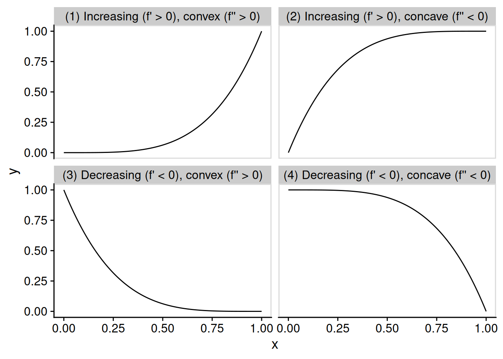
If a function has a non-negative second derivative, f''(x) \geq 0, we call it convexA twice differentiable function is convex if f''(x) \geq 0, and additionally is strictly convex if f''(x) > 0.. Additionally, if the second derivative is strictly positive, f''(x) > 0, we call the function strictly convex. A classic example of a strictly convex function is exponential growth. For example, let f(t) be the number of mice you will have at time t if you start with one boy mouse and one girl mouse at t = 0. If the number of mice doubles with each unit of time, then you’ll have \begin{aligned} f(0) &= 2, \\ f(1) &= 4, \\ f(2) &= 8, \\ f(3) &= 16, \\ f(4) &= 32, \\ \vdots \end{aligned} So not only is the function increasing, but it’s increasing more quickly as time goes on. Because the rate of increase is itself increasing, the function is strictly convex.
On the other hand, we call a function concaveA twice differentiable function is concave if f''(x) \leq 0, and additionally is strictly concave if f''(x) < 0. if f''(x) \leq 0, and additionally strictly concave if f''(x) < 0. Concave functions often arise in economic contexts. In particular, we often think that concave functions are a good way to model the amount of “utility” (happiness, loosely speaking) that a person derives from consuming a quantity of a good. For instance, let t be the number of tacos I’ve eaten and let u(t) be how happy I am as a function of the number of tacos I’ve eaten. There’s a big happiness boost going from 0 tacos (starving) to 1 taco (still hungry but not starving). There’s a smaller happiness boost going from 1 taco to 2 tacos (barely full). The boost keeps decreasing from there, and once I’m full I would actively prefer to not eat any additional tacos. Altogether, then, u(t) is strictly concave — each additional taco raises my happiness by a lower and lower amount.
A linear function is both convex and concave. However, it is neither strictly convex nor strictly concave. All that is a long way of saying that the second derivative of a linear function is always zero. That’s true because the derivative of a linear function is its slope, a constant, so the derivative of the derivative is zero.
Exercise 4.25 (Concave and convex functions) Using the second derivative, characterize the conditions under which each of the following functions is convex or concave:
A quadratic function of the form f(x) = a x^2 + b x + c.
An exponential function of the form f(x) = b^x, where b > 0.
A logarithmic function of the form f(x) = \log_b x, where b > 0 and b \neq 1.
Answer
We have f'(x) = 2 a x + b and thus f''(x) = 2a. So the function is concave if a \leq 0 and convex if a \geq 0.
We have f'(x) = b^x \cdot \log(b) and thus f''(x) = b^x \cdot (\log(b))^2. If b = 1, then we have \log(b) = 0 and the function is linear (both concave and convex). Otherwise, we have \log(b) \neq 0, hence (\log(b))^2 > 0, hence b^x \cdot (\log(b))^2 > 0, so the function is strictly convex.
We have f'(x) = \frac{1}{x \log(b)} = \frac{1}{\log(b)} \cdot x^{-1} and thus f''(x) = \frac{1}{\log(b)} \cdot \left[-1 \cdot x^{-2}\right] = \frac{-1}{x^2 \log(b)}. The sign of the second derivative is the same as that of \log(b), so the function is convex if b \in (0, 1) and is concave if b \in (1, \infty).
Exercise 4.26 (Concave portion of the normal PDF) A function can be concave on part of its domain and convex on other parts. For example, take the probability density function of the standard normal distribution, f(x) = \frac{1}{\sqrt{2 \pi}} e^{-x^2 / 2}.
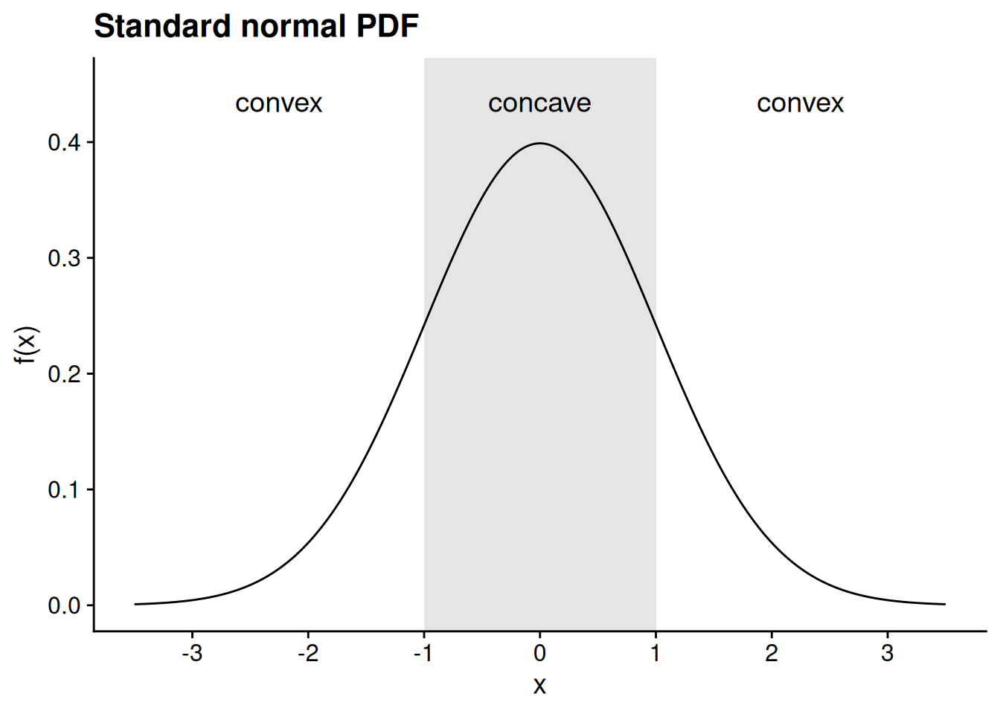
You can see from the graph that the standard normal PDF is concave on [-1, 1], while it is convex on the rest of its domain. Use its second derivative to prove this.
Answer
Using the constant multiple rule and the chain rule, we have \begin{aligned} f'(x) &= \frac{d}{dx} \left[\frac{1}{\sqrt{2 \pi}} e^{-x^2 / 2}\right] \\ &= \frac{1}{\sqrt{2 \pi}} \frac{d}{dx} \left[e^{-x^2/2}\right] \\ &= \frac{1}{\sqrt{2 \pi}} \left[e^{-x^2 / 2} \cdot \frac{-2x}{2}\right] \\ &= \frac{-1}{\sqrt{2 \pi}} \cdot x e^{-x^2/2}. \end{aligned} We can then use the constant multiple rule and the product rule to find the second derivative: \begin{aligned} f''(x) &= \frac{d}{dx} \left[\frac{-1}{\sqrt{2 \pi}} \cdot x e^{-x^2/2}\right] \\ &= \frac{-1}{\sqrt{2 \pi}} \frac{d}{dx} \left[x e^{-x^2/2}\right] \\ &= \frac{-1}{\sqrt{2 \pi}} \left[x \cdot \frac{d}{dx} \left(e^{-x^2/2}\right) + 1 \cdot e^{-x^2/2}\right] \\ &= \frac{-1}{\sqrt{2 \pi}} \left[x \cdot \left(-x e^{-x^2/2}\right) + e^{-x^2/2}\right] \\ &= \frac{-1}{\sqrt{2 \pi}} \left[e^{-x^2 / 2} - x^2 e^{-x^2/2}\right] \\ &= \frac{1}{\sqrt{2 \pi}} (x^2 - 1) e^{-x^2/2}. \end{aligned} Because \frac{1}{\sqrt{2 \pi}} > 0 and e^{-x^2/2} > 0 for all x, the sign of the second derivative will always be the same as that of x^2 - 1. Consequently, the second derivative is weakly negative — and thus the function is concave — if and only if -1 \leq x \leq 1.
4.4 Concept review
- Differential calculus
- Mathematical techniques for studying the “rate of change” of a function — how quickly or slowly the function is increasing or decreasing at a particular point in its domain.
- Limit of a function
- The limit of f(x) as x approaches c, denoted \lim_{x \to c} f(x), is the value that f(x) gets closer and closer to as x gets closer and closer to c without reaching it. The formal definition is that \lim_{x \to c} f(x) = y if, for all \epsilon > 0, there is a value \delta > 0 such that |f(x) - y| < \epsilon for all x \in (c - \delta, c) \cup (c, c + \delta). A function may not have a limit at a particular point.
- Left- and right-handed limits
- The left-handed limit is the value that f(x) gets closer and closer to as x gets closer and closer to c without meeting or exceeding it. The right-handed limit is the same thing, from the opposite direction.
- Continuity
- A function f : X \to Y is continuous at a point in its domain, c \in X, if its limit at that point exists and equals the value of the function: \lim_{x \to c} f(x) = f(c). We call f a continuous function if it is continuous at every point in its domain.
- Polynomial
- A polynomial is a function of the form f(x) = c_0 + c_1 x + c_2 x^2 + \cdots + c_k x^k, where k is a natural number and each coefficient c_0, \ldots, c_k is a real number.
- Composition
- Consider two functions h : X \to Y and g : Y \to Z. The composition of g and h is the function f : X \to Z defined by f(x) = g(h(x)).
- Slope
- For a linear function, f(x) = \alpha + \beta x, the slope is the coefficient \beta. It can be calculated using the rise-over-run formula: for any distinct points x_1 and x_2 in the domain of f, \beta = \frac{f(x_1) - f(x_2)}{x_1 - x_2}.
- Derivative
- The derivative of f at the point c, denoted f'(c), is a measure of how steeply the function is increasing or decreasing at that point. The formal definition of the derivative is that f'(c) = \lim_{x \to c} \frac{f(x) - f(c)}{x - c} = \lim_{h \to 0} \frac{f(c + h) - f(c)}{h}, provided that this limit exists.
- Differentiability
- A function f : X \to \mathbb{R} is differentiable at a point in its domain, c \in X, if the derivative f'(c) exists. We call f a differentiable function if it is differentiable at every point in its domain.
- Constant multiple rule
- If g(x) = c f(x), where c is a constant real number, then g'(x) = c f'(x).
- Sum rule
- If h(x) = f(x) + g(x), then h'(x) = f'(x) + g'(x).
- Product rule
- If h(x) = f(x) g(x), then h'(x) = f(x) g'(x) + f'(x) g(x).
- Quotient rule
- If h(x) = f(x) / g(x), then h'(x) = \frac{f'(x) g(x) - f(x) g'(x)}{g(x)^2}.
- Chain rule
- If h(x) = f(g(x)), then h'(x) = f'(g(x)) \cdot g'(x).
- Second derivative
- The second derivative of a differentiable function f(x), denoted f''(x), is the derivative of the function’s derivative: f''(c) = \lim_{x \to c} \frac{f'(x) - f'(c)}{x - c}.
- Twice differentiability
- A function f : X \to \mathbb{R} is twice differentiable at a point in its domain, c \in X, if the second derivative f''(c) exists. We call f a twice differentiable function if it is twice differentiable at every point in its domain.
- Convex function
- A twice differentiable function is convex if f''(x) \geq 0, and additionally is strictly convex if f''(x) > 0.
- Concave function
- A twice differentiable function is concave if f''(x) \leq 0, and additionally is strictly concave if f''(x) < 0.
- Chain rule
- If h(x) = f(g(x)), then h'(x) = f'(g(x)) \cdot g'(x).
- Composition
- Consider two functions h : X \to Y and g : Y \to Z. The composition of g and h is the function f : X \to Z defined by f(x) = g(h(x)).
- Concave function
- A twice differentiable function is concave if f''(x) \leq 0, and additionally is strictly concave if f''(x) < 0.
- Constant multiple rule
- If g(x) = c f(x), where c is a constant real number, then g'(x) = c f'(x).
- Continuity
- A function f : X \to Y is continuous at a point in its domain, c \in X, if its limit at that point exists and equals the value of the function: \lim_{x \to c} f(x) = f(c). We call f a continuous function if it is continuous at every point in its domain.
- Convex function
- A twice differentiable function is convex if f''(x) \geq 0, and additionally is strictly convex if f''(x) > 0.
- Derivative
- The derivative of f at the point c, denoted f'(c), is a measure of how steeply the function is increasing or decreasing at that point. The formal definition of the derivative is that f'(c) = \lim_{x \to c} \frac{f(x) - f(c)}{x - c} = \lim_{h \to 0} \frac{f(c + h) - f(c)}{h}, provided that this limit exists.
- Differentiability
- A function f : X \to \mathbb{R} is differentiable at a point in its domain, c \in X, if the derivative f'(c) exists. We call f a differentiable function if it is differentiable at every point in its domain.
- Differential calculus
- Mathematical techniques for studying the “rate of change” of a function — how quickly or slowly the function is increasing or decreasing at a particular point in its domain.
- Left- and right-handed limits
- The left-handed limit is the value that f(x) gets closer and closer to as x gets closer and closer to c without meeting or exceeding it. The right-handed limit is the same thing, from the opposite direction.
- Limit of a function
- The limit of f(x) as x approaches c, denoted \lim_{x \to c} f(x), is the value that f(x) gets closer and closer to as x gets closer and closer to c without reaching it. The formal definition is that \lim_{x \to c} f(x) = y if, for all \epsilon > 0, there is a value \delta > 0 such that |f(x) - y| < \epsilon for all x \in (c - \delta, c) \cup (c, c + \delta). A function may not have a limit at a particular point.
- Polynomial
- A polynomial is a function of the form f(x) = c_0 + c_1 x + c_2 x^2 + \cdots + c_k x^k, where k is a natural number and each coefficient c_0, \ldots, c_k is a real number.
- Product rule
- If h(x) = f(x) g(x), then h'(x) = f(x) g'(x) + f'(x) g(x).
- Quotient rule
- If h(x) = f(x) / g(x), then h'(x) = \frac{f'(x) g(x) - f(x) g'(x)}{g(x)^2}.
- Second derivative
- The second derivative of a differentiable function f(x), denoted f''(x), is the derivative of the function’s derivative: f''(c) = \lim_{x \to c} \frac{f'(x) - f'(c)}{x - c}.
- Slope
- For a linear function, f(x) = \alpha + \beta x, the slope is the coefficient \beta. It can be calculated using the rise-over-run formula: for any distinct points x_1 and x_2 in the domain of f, \beta = \frac{f(x_1) - f(x_2)}{x_1 - x_2}.
- Sum rule
- If h(x) = f(x) + g(x), then h'(x) = f'(x) + g'(x).
- Twice differentiability
- A function f : X \to \mathbb{R} is twice differentiable at a point in its domain, c \in X, if the second derivative f''(c) exists. We call f a twice differentiable function if it is twice differentiable at every point in its domain.